← 回股市觀察
盤中觀察 每日盤中觀察
2026/10/27 13:31 即時快照 · 當日盤中成交金額前 50 檔（上市 35＋上櫃 15）· 公開資料整理
46,042.16
加權指數 +0.73 點（+0.00%）
這是盤中快照，不是收盤結果。資料時間 2026-10-27 13:31:05（TWSE MIS 即時行情，上市／上櫃皆 delay=0）。
13:30 收盤（含最後一盤集合競價）會再變動；量能是以「已過交易時間比例」推估（尾盤大量時會低估）；
技術面標籤是把盤中現價代入原本以收盤價設計的規則（日線歷史只到前一交易日 9/14）。
統計範圍：候選池＝20261022 與 20261021 收盤成交值前段（上市 250／上櫃 130）取聯集，共 420 檔；再以今日盤中累計成交金額排序取
上市前 35＋上櫃前 15。漲跌家數是候選池內的數字，不是全市場（即時全市場家數證交所沒有開放端點）。
本頁為公開資料的整理與觀察，不構成投資建議，不報牌、不預測、不下買賣決策。
時程紀錄（本日盤中分析）▾ 點擊展開▴ 點擊收合
| 階段 | 時間 |
|---|
| 任務開始 | 由 Richard 提出時開始（手動執行） |
| 分析腳本執行 | 13:30:42 → 13:31:05（22.9 秒） |
| 資料快照時間 | 2026-10-27 13:31:05（行情時間戳 13:30:00） |
| 本頁產出 | 見頁尾版本時間 |
逐階段 log：
| 13:30:42 | START 盤中分析開始 |
| 13:30:42 | ① 抓即時指數（tse_t00 / otc_o00） |
| 13:30:42 | ② 建立候選池（20261022 與 20261021 成交值前段，上市＋上櫃） |
| 13:30:42 | 候選池共 420 檔 |
| 13:30:42 | ③ 抓即時候選池行情 |
| 13:31:05 | 取得即時報價 420 檔 |
| 13:31:05 | 候選池漲跌：漲 172／跌 238／平盤 10（快照時間 13:30:00） |
| 13:31:05 | ④ 選出 70 檔（上市 50＋上櫃 20），門檻 20.0 億 |
| 13:31:05 | ⑤ 抓日線歷史並算技術面 |
| 13:31:05 | ⑥ 產出（70 檔） |
K 線圖怎麼看：每一檔都附 K 線圖 —— 黃圈是轉折低點、粉圈是轉折高點（
虛線圈代表還沒確認的轉折）、藍線是月線（20 日均線）；頸線取最近兩個轉折低點之間的最高轉折高點，
突破頸線才會標示。
圖上另有兩條水平虛線、左側標數值：高點頸線（紅，最近兩個轉折低點之間的最高轉折高點）與低點頸線（綠，最近兩個轉折高點之間的最低轉折低點）；樣本不足就不畫。
紅色 K 棒＝收盤高於開盤、綠色＝收盤低於開盤。
大盤趨勢快篩（加權指數）（盤中近似） 資料日 2026/10/22・來源：證交所公開資料
主狀態：區間整理／均線糾結
前一交易日對照（10/21）：區間整理／均線糾結（量比 20 0.90） → 今日區間整理／均線糾結（量比 20 0.96）
指標、數值、判定（點開看 12 項明細：均線位置／排列、月線方向、頸線、轉折結構、位階、量價…）
加權指數今天跌 846.34 點（-1.81%），收 46,041.43、跌破月線 48,071.61；月線還在上彎，MA5 這條短均還沒收復，離高點頸線 49,285.22 還差 6.58%。
- 均線位置：4 條均線站上 0 條；沒站上的是 MA5 46,631.09（收盤比它低 1.26%）、MA10 47,570.79（收盤比它低 3.21%）、MA20 48,071.61（收盤比它低 4.22%）、MA60 46,207.09（收盤比它低 0.36%）
- 月線方向：月線 MA20 現在 48,071.61，比 5 個交易日前高 30.37 點 → 上彎
- 量能：集中市場成交 9,334.4 億，跟 5 日均量差不多（1.04 倍）、跟 20 日均量差不多（0.96 倍）
- 關鍵價位：高點頸線 49,285.22，還差 6.58%；低點頸線 44,639.15，還在下方 3.14%
- 大小型股：加權 -1.81%、櫃買 -3.47%，兩邊同向
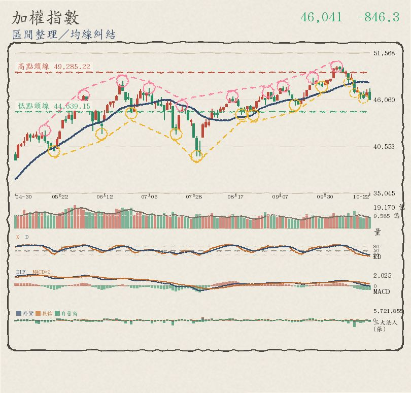
圖說：加權指數日 K（與個股圖相同標記）：黃圈＝轉折低點、粉圈＝轉折高點、虛線小圈＝還沒確認的轉折、藍線＝月線 MA20、水平虛線＝高點／低點頸線。最後一根是資料日當天。
本區塊為公開資料的技術面觀察，不構成投資建議，
不報牌、不預測、不下買賣決策。成交金額為集中市場總成交金額（含 ETF／權證），
與頁首摘要的「上市個股成交金額」口徑不同。標籤是統計，不是評分、也不是推薦。
上市 vs 上櫃（同期快篩）
加權 -1.81% vs 櫃買 -3.47%（同向） → 同向
（兩個市場分開寫，不合併成一個數字；櫃買為 TPEX 公開資料）
櫃買歷史：TPEX 逐日回補 130 根；來源：櫃買中心 www/zh-tw/indexInfo/sectinx（逐日，官方；OpenAPI tpex_index 只回當月）
（TPEX OpenAPI 只回當月，故逐日回補；歷史不足就不算該條均線並標「資料不足」，不用錯數字）
近 20 個交易日大盤狀態回溯（最新在上）（點開看逐日主狀態／量比／量價象限）
用同一支程式回算最近 20 個交易日（主狀態 S1~S8 與量比 20 皆為當日收盤當時的判定，
不是事後調整）；量比 20 未公布的日子寫「—」。
好條件最多的（前 10）
不好條件最多的（前 10）
好條件（7 項）：站上月線、月線向上、底底高、頭頭高、突破頸線、攻擊量（量增＋上漲）、守住今日高檔（距今日高點 1% 內）。
不好條件（7 項）：跌破前低、今日下跌、相對大盤弱、在月線之下、貼近今日低點（1% 內）、跌破昨日低點、月線下彎。
兩邊都是同一組日線資料＋盤中即時價算出來的「符合項目數」，只是把方向相反的條件分開數；
條件數不是評分或推薦，不構成投資建議。
盤中爆量（估量比 ≥ 1.5）（16 上市 13／上櫃 3）
跌破前低（線型轉弱）（26 上市 18／上櫃 8）
今日疲弱（跌幅前 10）（10 上市 7／上櫃 3）
逐檔（70 檔，依盤中成交金額排序）
台積電 2330 上市
2390 +5.0（+0.21%）
區間或轉弱 盤中成交值 652.28 億・全榜第 1 名（上市第 1 名）・相對大盤 +0.21
好條件 2/7：攻擊量（量增＋上漲）、守住今日高檔（距今日高點 1% 內）
不好條件 3/7：在月線之下、貼近今日低點（1% 內）、月線下彎
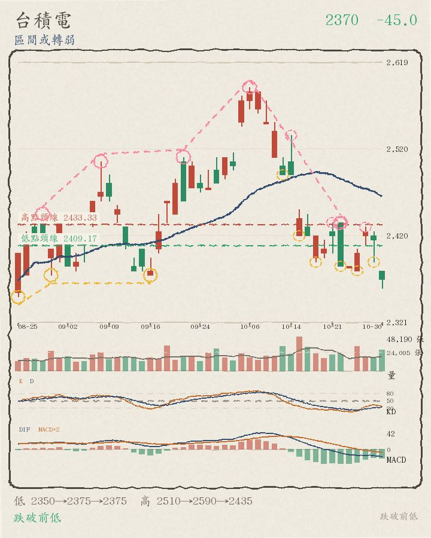
13:31 盤中 2390（+0.21%），比加權指數強 0.21 個百分點、跌破月線 2485.25，離高點頸線 2501.67 還差 4.5%，轉折還沒走出明顯方向。
- 月線位置：現價 2390 在月線 2485.25 之下（-3.8%）；5 日線 2410 也在月線之下（短均在下）；月線向下
- 量能：以已過交易時間推估，今天成交量約是 20 日均量的 1.20 倍（量增），比 20 日均量大不少；上漲又量增，量價配合
- 關鍵價位：高點頸線 2501.67 還沒突破，差 4.5%；前一交易日高點 2435（低於 1.8%）；今天盤中高點 2405（低於 0.6%）；今天盤中低點 2380（高於 0.4%）
- 轉折結構：低點 2350、2375、2375 與高點 2505、2510、2590 都沒有明顯遞增，屬於區間震盪或轉弱；還沒確認的轉折低點 10-19 2390、10-22 2385；還沒確認的轉折高點 10-21 2435、10-22 2435（圖上虛線小圈）
量增
↑ 回上方清單
聯發科 2454 上市
3960 -50.0（-1.25%）
底部墊高、未過前高 盤中成交值 473.46 億・全榜第 2 名（上市第 2 名）・相對大盤 -1.25
好條件 1/7：底底高
不好條件 6/7：跌破前低、今日下跌、相對大盤弱、在月線之下、跌破昨日低點、月線下彎
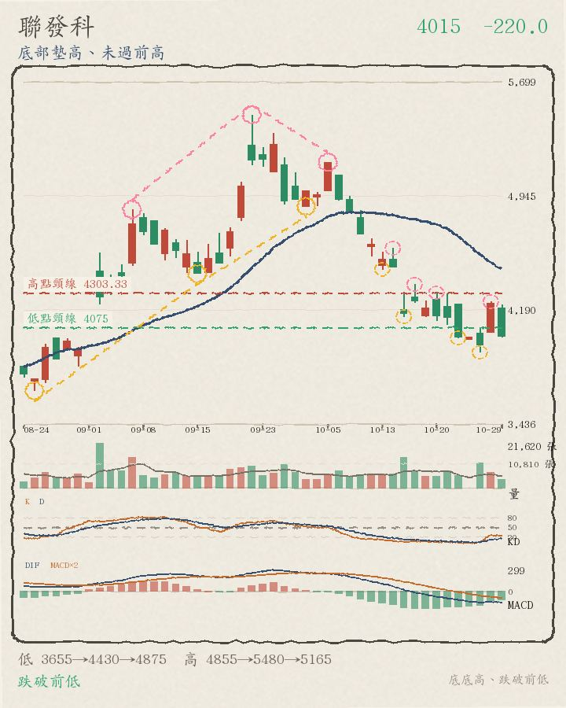
13:31 盤中 3960（-1.25%），比加權指數弱 1.25 個百分點、跌破月線 4678.25，離高點頸線 4332.5 還差 8.6%，底部還在墊高（但高點沒同步創高）。
- 月線位置：現價 3960 在月線 4678.25 之下（-15.3%）；5 日線 4151 也在月線之下（短均在下）；月線向下
- 量能：以已過交易時間推估，今天成交量約是 20 日均量的 1.62 倍（爆量），比 20 日均量大不少；下跌卻量增，量價背離
- 關鍵價位：已跌破前一個轉折低點；高點頸線 4332.5 還在現價上方 8.6%；前一交易日高點 4230（低於 6.4%）；今天盤中高點 4075（低於 2.8%）；今天盤中低點 3910（高於 1.3%）
- 轉折結構：低點 3655、4430、4875 墊高（底底高），但高點 4855、5480、5165 沒有同步創高；還沒確認的轉折低點 10-15 4145、10-22 4005；還沒確認的轉折高點 10-16 4360、10-20 4305（圖上虛線小圈）
南亞 1303 上市
297.5 -3.5（-1.16%）
高點墊高、底部不穩 盤中成交值 335.33 億・全榜第 3 名（上市第 3 名）・相對大盤 -1.16
好條件 3/7：站上月線、月線向上、頭頭高
不好條件 3/7：今日下跌、相對大盤弱、跌破昨日低點

13:31 盤中 297.5（-1.16%），比加權指數弱 1.16 個百分點、站上月線 286.5，離高點頸線 323.75 還差 8.1%，高點還在墊高（但底部沒同步墊高）。
- 月線位置：現價 297.5 在月線 286.5 之上（+3.8%）；5 日線 305.6 也在月線之上（短均在上）；月線向上
- 量能：以已過交易時間推估，今天成交量約是 20 日均量的 1.23 倍（量增），比 20 日均量大不少；下跌卻量增，量價背離
- 關鍵價位：高點頸線 323.75 還沒突破，差 8.1%；前一交易日高點 324.5（低於 8.3%）；今天盤中高點 321（低於 7.3%）；今天盤中低點 290.5（高於 2.4%）
- 轉折結構：高點 251.5、322、350.5 墊高（頭頭高），但低點 220.5、223、223 沒有同步墊高；還沒確認的轉折低點 10-20 295、10-22 299；還沒確認的轉折高點 10-14 350.5、10-21 325.5（圖上虛線小圈）
欣興 3037 上市
1060 -25.0（-2.30%）
上升趨勢（底底高＋頭頭高） 盤中成交值 308.69 億・全榜第 4 名（上市第 4 名）・相對大盤 -2.30
好條件 3/7：月線向上、底底高、頭頭高
不好條件 4/7：今日下跌、相對大盤弱、在月線之下、跌破昨日低點
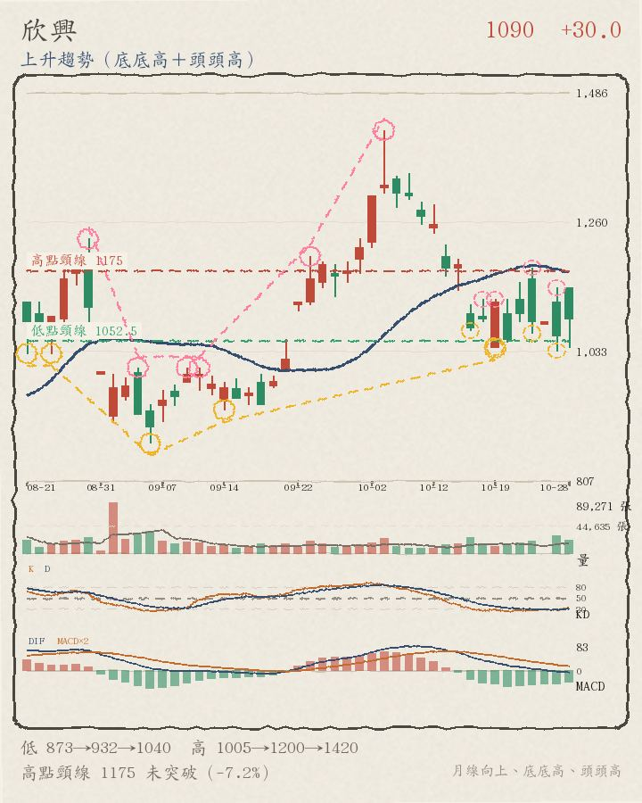
13:31 盤中 1060（-2.30%），比加權指數弱 2.30 個百分點、跌破月線 1184，離高點頸線 1190 還差 10.9%，轉折結構仍是底底高＋頭頭高。
- 月線位置：現價 1060 在月線 1184 之下（-10.5%）；5 日線 1090 也在月線之下（短均在下）；月線向上
- 量能：以已過交易時間推估，今天成交量約是 20 日均量的 1.95 倍（爆量），比 20 日均量大不少；下跌卻量增，量價背離
- 關鍵價位：高點頸線 1190 還沒突破，差 10.9%；前一交易日高點 1180（低於 10.2%）；今天盤中高點 1145（低於 7.4%）；今天盤中低點 1035（高於 2.4%）
- 轉折結構：低點 873、932、1040 一路墊高、高點 1005、1200、1420 也一路墊高，是底底高＋頭頭高；還沒確認的轉折低點 10-19 1040、10-22 1065；還沒確認的轉折高點 10-19 1125、10-22 1180（圖上虛線小圈）
聯茂 6213 上市
746 -31.0（-3.99%）
高點墊高、底部不穩 盤中成交值 272.37 億・全榜第 5 名（上市第 5 名）・相對大盤 -3.99
好條件 3/7：站上月線、月線向上、頭頭高
不好條件 3/7：今日下跌、相對大盤弱、跌破昨日低點
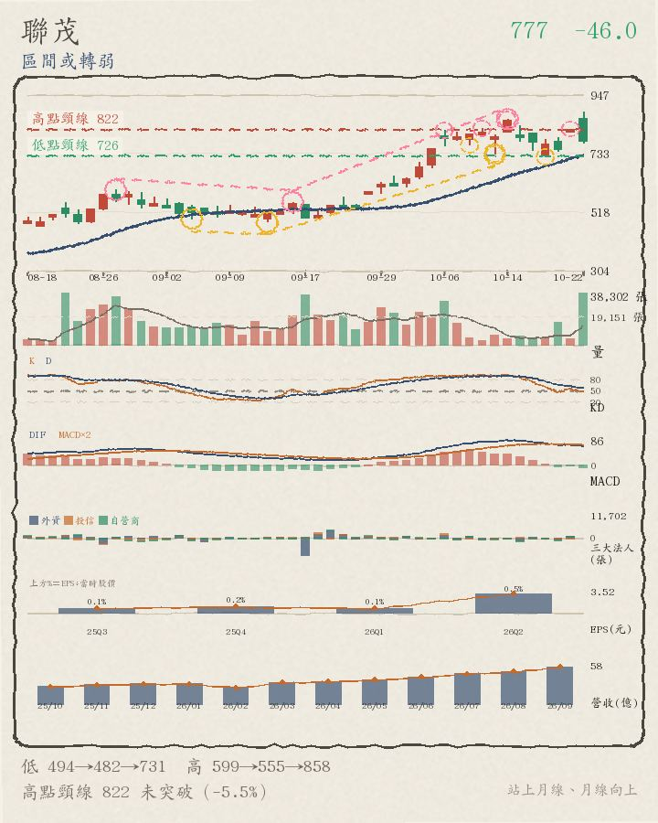
13:31 盤中 746（-3.99%），比加權指數弱 3.99 個百分點、站上月線 726.95，離高點頸線 871.5 還差 14.4%，高點還在墊高（但底部沒同步墊高）。
- 月線位置：現價 746 在月線 726.95 之上（+2.6%）；5 日線 778 也在月線之上（短均在上）；月線向上
- 量能：以已過交易時間推估，今天成交量約是 20 日均量的 2.63 倍（爆量），比 20 日均量大不少；下跌卻量增，量價背離
- 關鍵價位：高點頸線 871.5 還沒突破，差 14.4%；前一交易日高點 885（低於 15.7%）；今天盤中高點 854（低於 12.6%）；今天盤中低點 737（高於 1.2%）
- 轉折結構：高點 599、555、858 墊高（頭頭高），但低點 482、731、721 沒有同步墊高；還沒確認的轉折低點 10-19 721、10-22 770；還沒確認的轉折高點 10-14 858、10-22 885（圖上虛線小圈）
台達電 2308 上市
1510 -50.0（-3.21%）
高點墊高、底部不穩 盤中成交值 230.58 億・全榜第 6 名（上市第 6 名）・相對大盤 -3.21
好條件 1/7：頭頭高
不好條件 6/7：跌破前低、今日下跌、相對大盤弱、在月線之下、跌破昨日低點、月線下彎
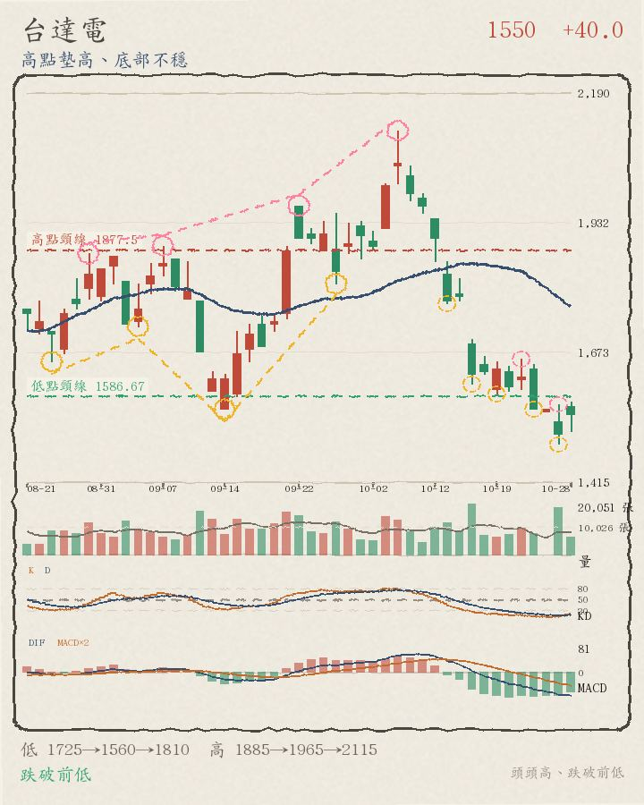
13:31 盤中 1510（-3.21%），比加權指數弱 3.21 個百分點、跌破月線 1819.5，離高點頸線 1985 還差 23.9%，高點還在墊高（但底部沒同步墊高）。
- 月線位置：現價 1510 在月線 1819.5 之下（-17.0%）；5 日線 1613 也在月線之下（短均在下）；月線向下
- 量能：以已過交易時間推估，今天成交量約是 20 日均量的 1.45 倍（量增），比 20 日均量大不少；下跌卻量增，量價背離
- 關鍵價位：已跌破前一個轉折低點；高點頸線 1985 還在現價上方 23.9%；前一交易日高點 1650（低於 8.5%）；今天盤中高點 1570（低於 3.8%）；今天盤中低點 1490（高於 1.3%）
- 轉折結構：高點 1885、1965、2115 墊高（頭頭高），但低點 1725、1560、1810 沒有同步墊高；還沒確認的轉折低點 10-19 1590、10-22 1560；還沒確認的轉折高點 10-06 2115、10-21 1660（圖上虛線小圈）
臻鼎-KY 4958 上市
520 -47.0（-8.29%）
上升趨勢（底底高＋頭頭高） 盤中成交值 229.16 億・全榜第 7 名（上市第 7 名）・相對大盤 -8.29
好條件 3/7：月線向上、底底高、頭頭高
不好條件 5/7：今日下跌、相對大盤弱、在月線之下、貼近今日低點（1% 內）、跌破昨日低點
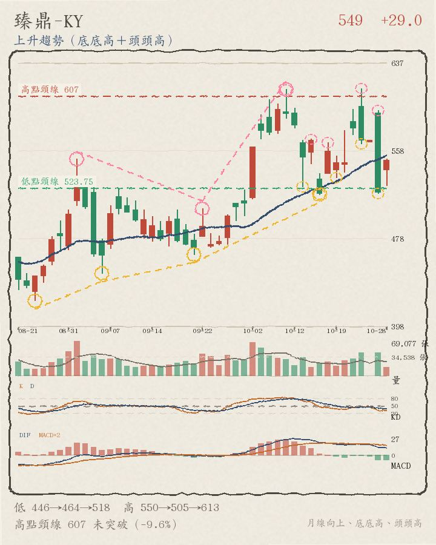
13:31 盤中 520（-8.29%），比加權指數弱 8.29 個百分點、跌破月線 543.3，離高點頸線 610.33 還差 14.8%，轉折結構仍是底底高＋頭頭高。
- 月線位置：現價 520 在月線 543.3 之下（-4.3%）；5 日線 559.2 也在月線之上（短均在上）；月線向上
- 量能：以已過交易時間推估，今天成交量約是 20 日均量的 1.34 倍（量增），比 20 日均量大不少；下跌卻量增，量價背離
- 關鍵價位：高點頸線 610.33 還沒突破，差 14.8%；前一交易日高點 614（低於 15.3%）；今天盤中高點 594（低於 12.5%）；今天盤中低點 519（高於 0.2%）
- 轉折結構：低點 446.5、463.5、518 一路墊高、高點 550、505、613 也一路墊高，是底底高＋頭頭高；還沒確認的轉折低點 10-19 533、10-22 564；還沒確認的轉折高點 10-16 565、10-22 614（圖上虛線小圈）
台光電 2383 上市
4760 -310.0（-6.11%）
區間或轉弱 盤中成交值 199.73 億・全榜第 8 名（上市第 8 名）・相對大盤 -6.11
好條件 1/7：月線向上
不好條件 5/7：跌破前低、今日下跌、相對大盤弱、在月線之下、跌破昨日低點
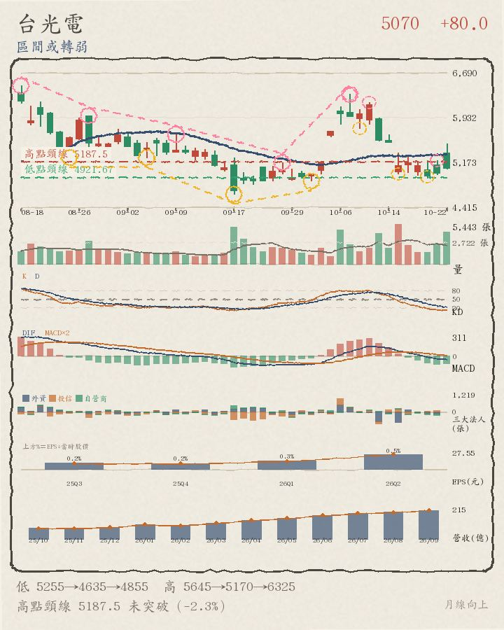
13:31 盤中 4760（-6.11%），比加權指數弱 6.11 個百分點、跌破月線 5311，離高點頸線 5565 還差 14.5%，轉折還沒走出明顯方向。
- 月線位置：現價 4760 在月線 5311 之下（-10.4%）；5 日線 5059 也在月線之下（短均在下）；月線向上
- 量能：以已過交易時間推估，今天成交量約是 20 日均量的 1.78 倍（爆量），比 20 日均量大不少；下跌卻量增，量價背離
- 關鍵價位：已跌破前一個轉折低點；高點頸線 5565 還在現價上方 14.5%；前一交易日高點 5485（低於 13.2%）；今天盤中高點 5200（低於 8.5%）；今天盤中低點 4685（高於 1.6%）
- 轉折結構：低點 5255、4635、4855 與高點 5645、5170、6325 都沒有明顯遞增，屬於區間震盪或轉弱；還沒確認的轉折低點 10-15 4980、10-20 4930；還沒確認的轉折高點 10-12 6190、10-22 5485（圖上虛線小圈）
台燿 6274 上櫃
1280 -140.0（-9.86%）
高點墊高、底部不穩 盤中成交值 197.08 億・全榜第 9 名（上櫃第 1 名）・相對大盤 -9.86
好條件 2/7：月線向上、頭頭高
不好條件 4/7：今日下跌、相對大盤弱、在月線之下、跌破昨日低點
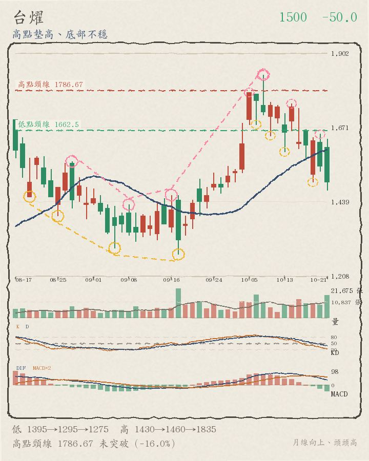
13:31 盤中 1280（-9.86%），比加權指數弱 9.86 個百分點、跌破月線 1600.75，離高點頸線 1445 還差 11.4%，高點還在墊高（但底部沒同步墊高）。
- 月線位置：現價 1280 在月線 1600.75 之下（-20.0%）；5 日線 1543 也在月線之下（短均在下）；月線向上
- 量能：以已過交易時間推估，今天成交量約是 20 日均量的 1.54 倍（爆量），比 20 日均量大不少；下跌卻量增，量價背離
- 關鍵價位：高點頸線 1445 還沒突破，差 11.4%；前一交易日高點 1615（低於 20.7%）；今天盤中高點 1450（低於 11.7%）；今天盤中低點 1280（高於 0.0%）
- 轉折結構：高點 1430、1460、1835 墊高（頭頭高），但低點 1395、1295、1275 沒有同步墊高；還沒確認的轉折低點 10-19 1500、10-22 1410；還沒確認的轉折高點 10-14 1745、10-20 1650（圖上虛線小圈）
南亞科 2408 上市
441 +27.0（+6.52%）
區間或轉弱 盤中成交值 189.1 億・全榜第 10 名（上市第 9 名）・相對大盤 +6.52
好條件 0/7：無
不好條件 3/7：跌破前低、在月線之下、月線下彎

13:31 盤中 441（+6.52%），比加權指數強 6.52 個百分點、跌破月線 488.85，離高點頸線 452.5 還差 2.5%，轉折還沒走出明顯方向。
- 月線位置：現價 441 在月線 488.85 之下（-9.8%）；5 日線 431.2 也在月線之下（短均在下）；月線向下
- 量能：以已過交易時間推估，今天成交量約是 20 日均量的 0.97 倍（量平），跟 20 日均量差不多
- 關鍵價位：已跌破前一個轉折低點；高點頸線 452.5 還在現價上方 2.5%；前一交易日高點 442.5（低於 0.3%）；今天盤中高點 449（低於 1.8%）；今天盤中低點 431（高於 2.3%）
- 轉折結構：低點 470、465.5、488 與高點 540、533、537 都沒有明顯遞增，屬於區間震盪或轉弱；還沒確認的轉折低點 10-19 415.5、10-22 412；還沒確認的轉折高點 10-16 461、10-21 444（圖上虛線小圈）
景碩 3189 上市
941 -45.0（-4.56%）
區間或轉弱 盤中成交值 180.12 億・全榜第 11 名（上市第 10 名）・相對大盤 -4.56
好條件 1/7：月線向上
不好條件 4/7：今日下跌、相對大盤弱、在月線之下、跌破昨日低點

13:31 盤中 941（-4.56%），比加權指數弱 4.56 個百分點、跌破月線 1007.7，離高點頸線 1065 還差 11.6%，轉折還沒走出明顯方向。
- 月線位置：現價 941 在月線 1007.7 之下（-6.6%）；5 日線 984.6 也在月線之下（短均在下）；月線向上
- 量能：以已過交易時間推估，今天成交量約是 20 日均量的 1.05 倍（量平），比 20 日均量大一些
- 關鍵價位：高點頸線 1065 還沒突破，差 11.6%；前一交易日高點 1065（低於 11.6%）；今天盤中高點 1055（低於 10.8%）；今天盤中低點 928（高於 1.4%）
- 轉折結構：低點 766、766、784 與高點 835、835、1150 都沒有明顯遞增，屬於區間震盪或轉弱；還沒確認的轉折低點 10-20 941、10-22 976；還沒確認的轉折高點 10-16 1045、10-22 1065（圖上虛線小圈）
創意 3443 上市
7430 -155.0（-2.04%）
高點墊高、底部不穩 盤中成交值 170 億・全榜第 12 名（上市第 11 名）・相對大盤 -2.04
好條件 2/7：月線向上、頭頭高
不好條件 4/7：今日下跌、相對大盤弱、在月線之下、跌破昨日低點
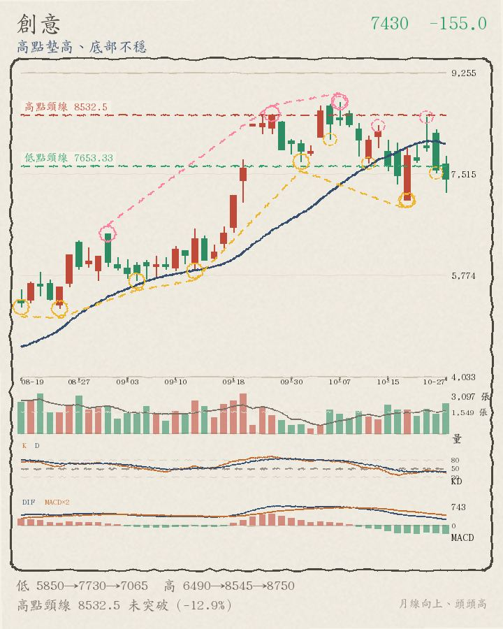
13:31 盤中 7430（-2.04%），比加權指數弱 2.04 個百分點、跌破月線 8079.75，離高點頸線 8532.5 還差 12.9%，高點還在墊高（但底部沒同步墊高）。
- 月線位置：現價 7430 在月線 8079.75 之下（-8.0%）；5 日線 7728 也在月線之下（短均在下）；月線向上
- 量能：以已過交易時間推估，今天成交量約是 20 日均量的 1.64 倍（爆量），比 20 日均量大不少；下跌卻量增，量價背離
- 關鍵價位：高點頸線 8532.5 還沒突破，差 12.9%；前一交易日高點 8275（低於 10.2%）；今天盤中高點 7825（低於 5.0%）；今天盤中低點 7200（高於 3.2%）
- 轉折結構：高點 6490、8545、8750 墊高（頭頭高），但低點 5850、7730、7065 沒有同步墊高；還沒確認的轉折低點 10-19 7065、10-22 7530；還沒確認的轉折高點 10-14 8345、10-21 8490（圖上虛線小圈）
國巨* 2327 上市
521 +14.0（+2.76%）
區間或轉弱 盤中成交值 162.36 億・全榜第 13 名（上市第 12 名）・相對大盤 +2.76
好條件 0/7：無
不好條件 3/7：跌破前低、在月線之下、月線下彎
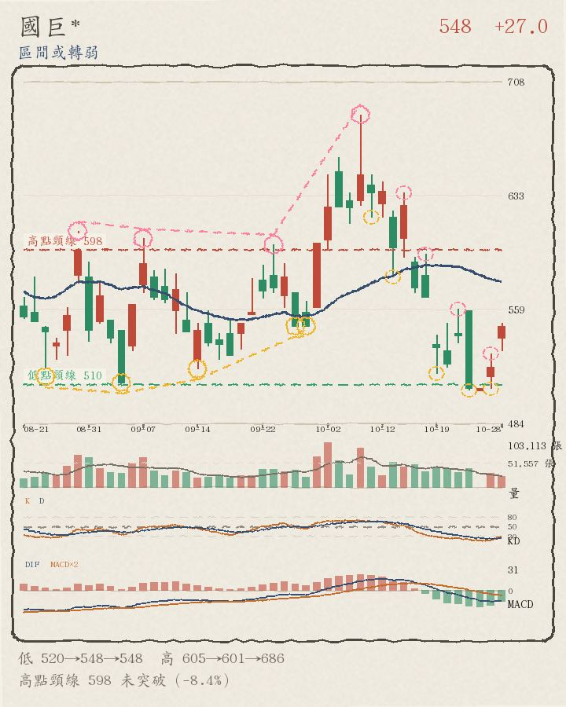
13:31 盤中 521（+2.76%），比加權指數強 2.76 個百分點、跌破月線 584.45，離高點頸線 600.33 還差 13.2%，轉折還沒走出明顯方向。
- 月線位置：現價 521 在月線 584.45 之下（-10.9%）；5 日線 534.6 也在月線之下（短均在下）；月線向下
- 量能：以已過交易時間推估，今天成交量約是 20 日均量的 0.67 倍（量縮），比 20 日均量少很多；上漲但量縮，量價背離
- 關鍵價位：已跌破前一個轉折低點；高點頸線 600.33 還在現價上方 13.2%；前一交易日高點 558（低於 6.6%）；今天盤中高點 530（低於 1.7%）；今天盤中低點 507（高於 2.8%）
- 轉折結構：低點 520、548、548 與高點 605、601、686 都沒有明顯遞增，屬於區間震盪或轉弱；還沒確認的轉折低點 10-19 517、10-22 506；還沒確認的轉折高點 10-16 595、10-21 559（圖上虛線小圈）
聯電 2303 上市
122.5 -3.0（-2.39%）
底部墊高、未過前高 盤中成交值 153.15 億・全榜第 14 名（上市第 13 名）・相對大盤 -2.39
好條件 1/7：底底高
不好條件 6/7：跌破前低、今日下跌、相對大盤弱、在月線之下、跌破昨日低點、月線下彎

13:31 盤中 122.5（-2.39%），比加權指數弱 2.39 個百分點、跌破月線 145.425，離高點頸線 146.5 還差 16.4%，底部還在墊高（但高點沒同步創高）。
- 月線位置：現價 122.5 在月線 145.425 之下（-15.8%）；5 日線 129 也在月線之下（短均在下）；月線向下
- 量能：以已過交易時間推估，今天成交量約是 20 日均量的 0.85 倍（量平），比 20 日均量少一些
- 關鍵價位：已跌破前一個轉折低點；高點頸線 146.5 還在現價上方 16.4%；前一交易日高點 131（低於 6.5%）；今天盤中高點 127.5（低於 3.9%）；今天盤中低點 121（高於 1.2%）
- 轉折結構：低點 123、135、151.5 墊高（底底高），但高點 145.5、168.5、165 沒有同步創高；還沒確認的轉折低點 10-19 126、10-22 125；還沒確認的轉折高點 10-14 144、10-22 131（圖上虛線小圈）
大立光 3008 上市
6035 -140.0（-2.27%）
區間或轉弱 盤中成交值 150.45 億・全榜第 15 名（上市第 14 名）・相對大盤 -2.27
好條件 0/7：無
不好條件 6/7：跌破前低、今日下跌、相對大盤弱、在月線之下、跌破昨日低點、月線下彎
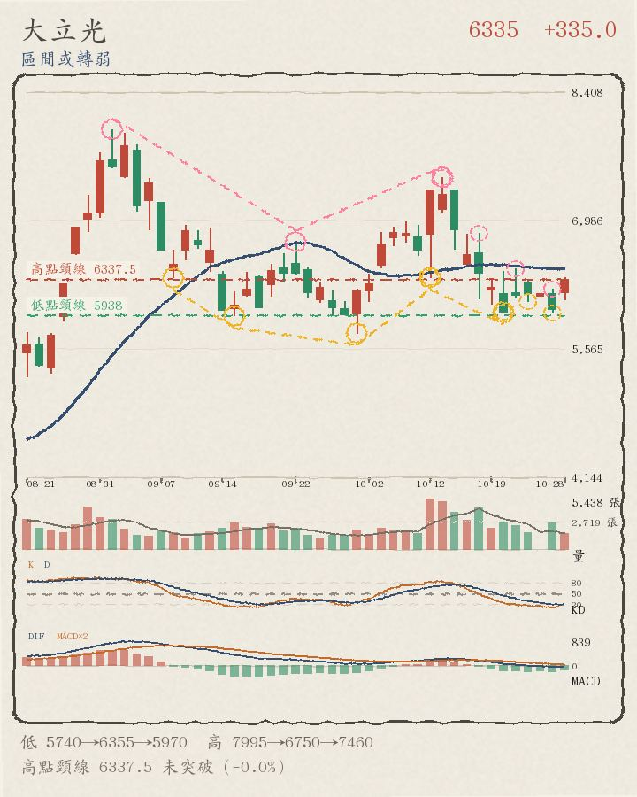
13:31 盤中 6035（-2.27%），比加權指數弱 2.27 個百分點、跌破月線 6472，離高點頸線 6855 還差 12.0%，轉折還沒走出明顯方向。
- 月線位置：現價 6035 在月線 6472 之下（-6.8%）；5 日線 6193 也在月線之下（短均在下）；月線向下
- 量能：以已過交易時間推估，今天成交量約是 20 日均量的 0.98 倍（量平），跟 20 日均量差不多
- 關鍵價位：已跌破前一個轉折低點；高點頸線 6855 還在現價上方 12.0%；前一交易日高點 6330（低於 4.7%）；今天盤中高點 6225（低於 3.1%）；今天盤中低點 5960（高於 1.3%）
- 轉折結構：低點 5930、5740、6355 與高點 7995、6750、7460 都沒有明顯遞增，屬於區間震盪或轉弱；還沒確認的轉折低點 10-20 5970、10-22 6090；還沒確認的轉折高點 10-16 6845、10-21 6450（圖上虛線小圈）
日月光投控 3711 上市
652 -2.0（-0.31%）
高點墊高、底部不穩 盤中成交值 144.86 億・全榜第 16 名（上市第 15 名）・相對大盤 -0.31
好條件 2/7：月線向上、頭頭高
不好條件 3/7：今日下跌、相對大盤弱、在月線之下
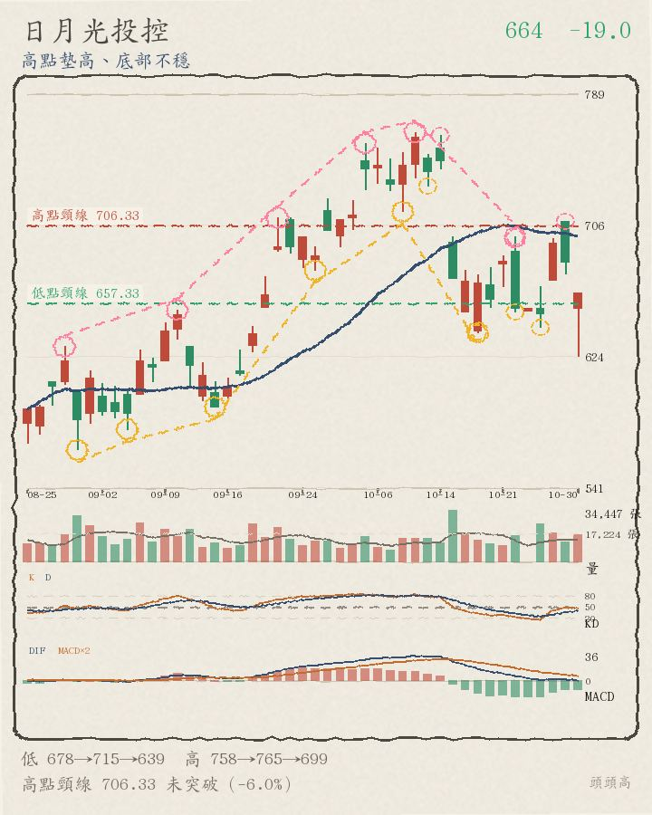
13:31 盤中 652（-0.31%），比加權指數弱 0.31 個百分點、跌破月線 706.05，離高點頸線 705 還差 7.5%，高點還在墊高（但底部沒同步墊高）。
- 月線位置：現價 652 在月線 706.05 之下（-7.7%）；5 日線 667.8 也在月線之下（短均在下）；月線向上
- 量能：以已過交易時間推估，今天成交量約是 20 日均量的 1.52 倍（爆量），比 20 日均量大不少；下跌卻量增，量價背離
- 關鍵價位：高點頸線 705 還沒突破，差 7.5%；前一交易日高點 699（低於 6.7%）；今天盤中高點 668（低於 2.4%）；今天盤中低點 642（高於 1.6%）
- 轉折結構：高點 711、758、765 墊高（頭頭高），但低點 678、715、639 沒有同步墊高；還沒確認的轉折低點 10-19 639、10-22 652；還沒確認的轉折高點 10-14 763、10-22 699（圖上虛線小圈）
健策 3653 上市
5860 -210.0（-3.46%）
區間或轉弱 盤中成交值 137.94 億・全榜第 17 名（上市第 16 名）・相對大盤 -3.46
好條件 1/7：月線向上
不好條件 5/7：跌破前低、今日下跌、相對大盤弱、在月線之下、跌破昨日低點

13:31 盤中 5860（-3.46%），比加權指數弱 3.46 個百分點、跌破月線 6765.75，離高點頸線 7293.75 還差 19.7%，轉折還沒走出明顯方向。
- 月線位置：現價 5860 在月線 6765.75 之下（-13.4%）；5 日線 6509 也在月線之下（短均在下）；月線向上
- 量能：以已過交易時間推估，今天成交量約是 20 日均量的 1.98 倍（爆量），比 20 日均量大不少；下跌卻量增，量價背離
- 關鍵價位：已跌破前一個轉折低點；高點頸線 7293.75 還在現價上方 19.7%；前一交易日高點 6675（低於 12.2%）；今天盤中高點 6095（低於 3.9%）；今天盤中低點 5710（高於 2.6%）
- 轉折結構：低點 5480、5210、6760 與高點 7160、7440、7330 都沒有明顯遞增，屬於區間震盪或轉弱；還沒確認的轉折低點 10-19 6330、10-22 5995；還沒確認的轉折高點 10-14 7330、10-21 6985（圖上虛線小圈）
精材 3374 上櫃
463.5 +0.0（+0.00%）
區間或轉弱 盤中成交值 135.34 億・全榜第 18 名（上櫃第 2 名）・相對大盤 +0.00
好條件 1/7：月線向上
不好條件 1/7：在月線之下

13:31 盤中 463.5（+0.00%），比加權指數強 0.00 個百分點、跌破月線 467.65，離高點頸線 499.25 還差 7.2%，轉折還沒走出明顯方向。
- 月線位置：現價 463.5 在月線 467.65 之下（-0.9%）；5 日線 446.7 也在月線之下（短均在下）；月線向上
- 量能：以已過交易時間推估，今天成交量約是 20 日均量的 2.97 倍（爆量），比 20 日均量大不少
- 關鍵價位：高點頸線 499.25 還沒突破，差 7.2%；前一交易日高點 506（低於 8.4%）；今天盤中高點 509（低於 8.9%）；今天盤中低點 456（高於 1.6%）
- 轉折結構：低點 407、436.5、399 與高點 496、487、530 都沒有明顯遞增，屬於區間震盪或轉弱；還沒確認的轉折低點 10-13 444、10-19 399；還沒確認的轉折高點 10-14 508、10-22 506（圖上虛線小圈）
鴻海 2317 上市
247.5 +2.5（+1.02%）
底部墊高、未過前高 盤中成交值 128.81 億・全榜第 19 名（上市第 17 名）・相對大盤 +1.02
好條件 3/7：底底高、攻擊量（量增＋上漲）、守住今日高檔（距今日高點 1% 內）
不好條件 2/7：在月線之下、月線下彎

13:31 盤中 247.5（+1.02%），比加權指數強 1.02 個百分點、跌破月線 248.225，離高點頸線 258.25 還差 4.2%，底部還在墊高（但高點沒同步創高）。
- 月線位置：現價 247.5 在月線 248.225 之下（-0.3%）；5 日線 244 也在月線之下（短均在下）；月線向下
- 量能：以已過交易時間推估，今天成交量約是 20 日均量的 1.34 倍（量增），比 20 日均量大不少；上漲又量增，量價配合
- 關鍵價位：高點頸線 258.25 還沒突破，差 4.2%；前一交易日高點 250.5（低於 1.2%）；今天盤中高點 248.5（低於 0.4%）；今天盤中低點 244（高於 1.4%）
- 轉折結構：低點 238、243.5、247 墊高（底底高），但高點 259、257、266.5 沒有同步創高；還沒確認的轉折低點 10-20 237、10-22 244.5；還沒確認的轉折高點 10-16 247、10-22 250.5（圖上虛線小圈）
南電 8046 上市
1255 -10.0（-0.79%）
底部墊高、未過前高 盤中成交值 127.73 億・全榜第 20 名（上市第 18 名）・相對大盤 -0.79
好條件 2/7：月線向上、底底高
不好條件 4/7：今日下跌、相對大盤弱、在月線之下、跌破昨日低點
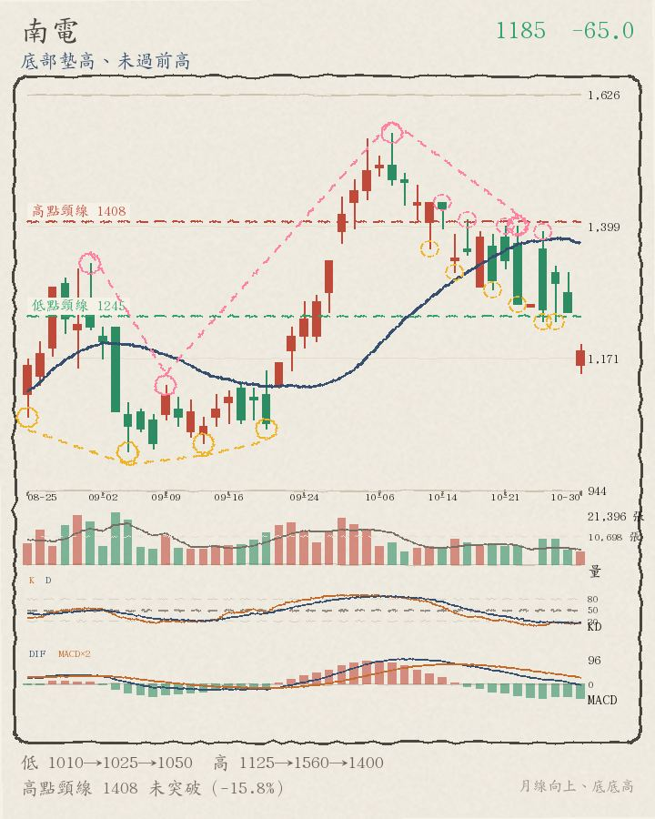
13:31 盤中 1255（-0.79%），比加權指數弱 0.79 個百分點、跌破月線 1368，離高點頸線 1412.5 還差 11.2%，底部還在墊高（但高點沒同步創高）。
- 月線位置：現價 1255 在月線 1368 之下（-8.3%）；5 日線 1329 也在月線之下（短均在下）；月線向上
- 量能：以已過交易時間推估，今天成交量約是 20 日均量的 0.94 倍（量平），比 20 日均量少一些
- 關鍵價位：高點頸線 1412.5 還沒突破，差 11.2%；前一交易日高點 1400（低於 10.4%）；今天盤中高點 1390（低於 9.7%）；今天盤中低點 1235（高於 1.6%）
- 轉折結構：低點 1010、1025、1050 墊高（底底高），但高點 1335、1125、1560 沒有同步創高；還沒確認的轉折低點 10-20 1290、10-22 1265；還沒確認的轉折高點 10-21 1400、10-22 1400（圖上虛線小圈）
友達 2409 上市
33.45 -1.9（-5.51%）
上升趨勢（底底高＋頭頭高） 盤中成交值 112.71 億・全榜第 21 名（上市第 19 名）・相對大盤 -5.51
好條件 3/7：月線向上、底底高、頭頭高
不好條件 5/7：跌破前低、今日下跌、相對大盤弱、在月線之下、跌破昨日低點
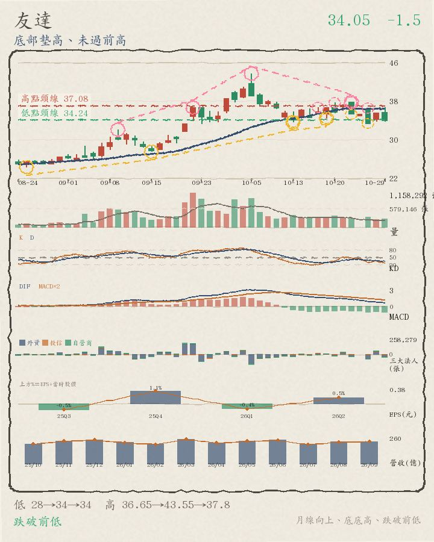
13:31 盤中 33.45（-5.51%），比加權指數弱 5.51 個百分點、跌破月線 36.54，離高點頸線 37.21 還差 10.1%，轉折結構仍是底底高＋頭頭高。
- 月線位置：現價 33.45 在月線 36.54 之下（-8.5%）；5 日線 36.2 也在月線之下（短均在下）；月線向上
- 量能：以已過交易時間推估，今天成交量約是 20 日均量的 0.62 倍（量縮），比 20 日均量少很多
- 關鍵價位：已跌破前一個轉折低點；高點頸線 37.21 還在現價上方 10.1%；前一交易日高點 37.8（低於 11.5%）；今天盤中高點 36.55（低於 8.5%）；今天盤中低點 33.45（高於 0.0%）
- 轉折結構：低點 27.75、33.75、34.45 一路墊高、高點 32.2、36.65、43.55 也一路墊高，是底底高＋頭頭高；還沒確認的轉折低點 10-19 34.45、10-22 35.3；還沒確認的轉折高點 10-20 37.65、10-22 37.8（圖上虛線小圈）
力積電 6770 上市
69.4 +3.0（+4.52%）
區間或轉弱 盤中成交值 110.6 億・全榜第 22 名（上市第 20 名）・相對大盤 +4.52
好條件 1/7：攻擊量（量增＋上漲）
不好條件 2/7：在月線之下、月線下彎
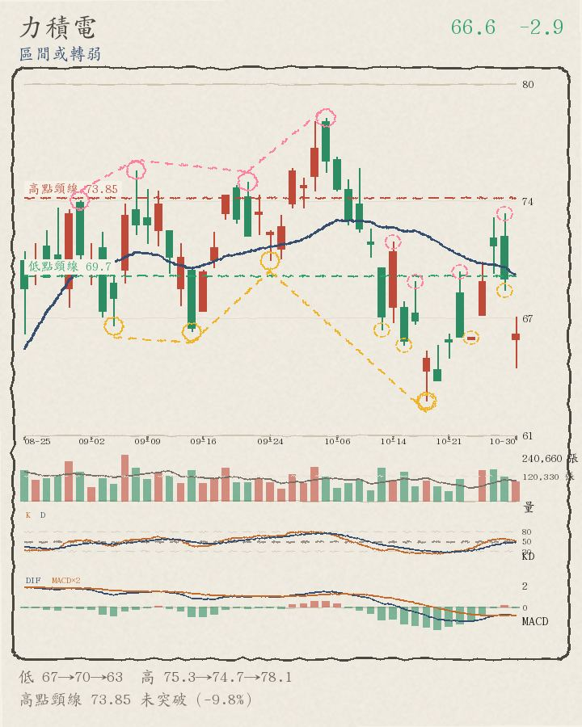
13:31 盤中 69.4（+4.52%），比加權指數強 4.52 個百分點、跌破月線 70.79，離高點頸線 70.27 還差 1.2%，轉折還沒走出明顯方向。
- 月線位置：現價 69.4 在月線 70.79 之下（-2.0%）；5 日線 65.86 也在月線之下（短均在下）；月線向下
- 量能：以已過交易時間推估，今天成交量約是 20 日均量的 1.56 倍（爆量），比 20 日均量大不少；上漲又量增，量價配合
- 關鍵價位：高點頸線 70.27 還沒突破，差 1.2%；前一交易日高點 69.9（低於 0.7%）；今天盤中高點 70.4（低於 1.4%）；今天盤中低點 67.6（高於 2.7%）
- 轉折結構：低點 66.7、70.5、63 與高點 75.3、74.7、78.1 都沒有明顯遞增，屬於區間震盪或轉弱；還沒確認的轉折低點 10-15 66、10-19 63；還沒確認的轉折高點 10-16 69.4、10-22 69.9（圖上虛線小圈）
玉晶光 3406 上市
1210 +50.0（+4.31%）
區間或轉弱 盤中成交值 107.88 億・全榜第 23 名（上市第 21 名）・相對大盤 +4.31
好條件 3/7：站上月線、月線向上、攻擊量（量增＋上漲）
不好條件 0/7：無
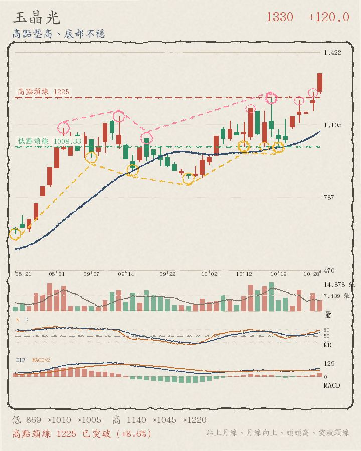
13:31 盤中 1210（+4.31%），比加權指數強 4.31 個百分點、站上月線 1027.6，離高點頸線 1215 還差 0.4%，轉折還沒走出明顯方向。
- 月線位置：現價 1210 在月線 1027.6 之上（+17.8%）；5 日線 1094 也在月線之上（短均在上）；月線向上
- 量能：以已過交易時間推估，今天成交量約是 20 日均量的 1.36 倍（量增），比 20 日均量大不少；上漲又量增，量價配合
- 關鍵價位：高點頸線 1215 還沒突破，差 0.4%；前一交易日高點 1210（高於 0.0%）；今天盤中高點 1245（低於 2.8%）；今天盤中低點 1165（高於 3.9%）
- 轉折結構：低點 869、1010、1005 與高點 1140、1045、1220 都沒有明顯遞增，屬於區間震盪或轉弱；還沒確認的轉折低點 10-15 1010、10-19 1005；還沒確認的轉折高點 10-16 1220、10-22 1210（圖上虛線小圈）
華邦電 2344 上市
163 +8.5（+5.50%）
區間或轉弱 盤中成交值 107.81 億・全榜第 24 名（上市第 22 名）・相對大盤 +5.50
好條件 1/7：守住今日高檔（距今日高點 1% 內）
不好條件 2/7：在月線之下、月線下彎
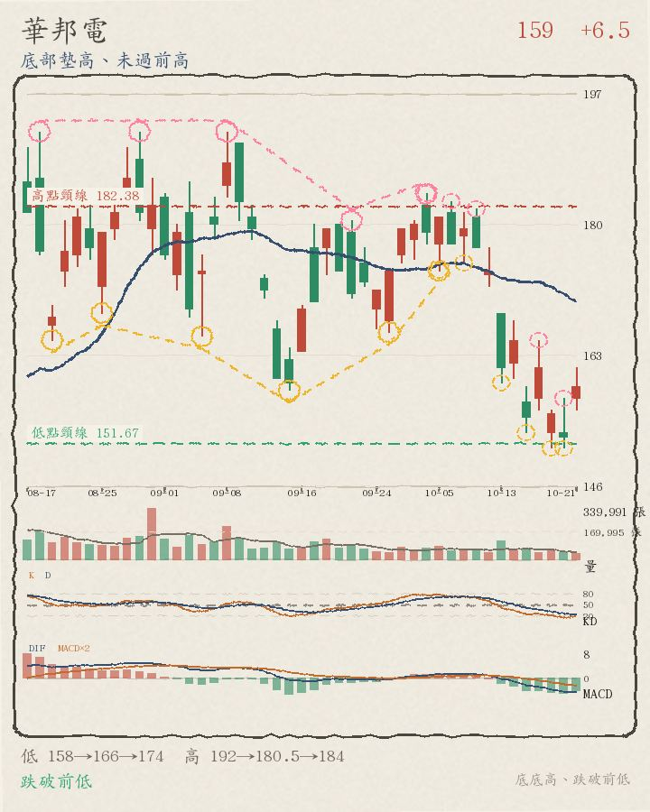
13:31 盤中 163（+5.50%），比加權指數強 5.50 個百分點、跌破月線 169.075，離高點頸線 163.25 還差 0.2%，轉折還沒走出明顯方向。
- 月線位置：現價 163 在月線 169.075 之下（-3.6%）；5 日線 156.7 也在月線之下（短均在下）；月線向下
- 量能：以已過交易時間推估，今天成交量約是 20 日均量的 1.00 倍（量平），跟 20 日均量差不多
- 關鍵價位：高點頸線 163.25 還沒突破，差 0.2%；前一交易日高點 161（高於 1.2%）；今天盤中高點 164（低於 0.6%）；今天盤中低點 157.5（高於 3.5%）
- 轉折結構：低點 166、174、151 與高點 192、180.5、184 都沒有明顯遞增，屬於區間震盪或轉弱；還沒確認的轉折低點 10-20 151、10-22 154；還沒確認的轉折高點 10-16 165、10-21 161.5（圖上虛線小圈）
量平
↑ 回上方清單
華新科 2492 上市
372.5 +4.5（+1.22%）
區間或轉弱 盤中成交值 97.59 億・全榜第 25 名（上市第 23 名）・相對大盤 +1.22
好條件 2/7：站上月線、月線向上
不好條件 1/7：貼近今日低點（1% 內）

13:31 盤中 372.5（+1.22%），比加權指數強 1.22 個百分點、站上月線 368.475，離高點頸線 426.5 還差 12.7%，轉折還沒走出明顯方向。
- 月線位置：現價 372.5 在月線 368.475 之上（+1.1%）；5 日線 380.3 也在月線之上（短均在上）；月線向上
- 量能：以已過交易時間推估，今天成交量約是 20 日均量的 0.83 倍（量平），比 20 日均量少很多；上漲但量縮，量價背離
- 關鍵價位：高點頸線 426.5 還沒突破，差 12.7%；前一交易日高點 422（低於 11.7%）；今天盤中高點 391（低於 4.7%）；今天盤中低點 370（高於 0.7%）
- 轉折結構：低點 298.5、376.5、355.5 與高點 344、326、431.5 都沒有明顯遞增，屬於區間震盪或轉弱；還沒確認的轉折低點 10-19 355.5、10-22 365；還沒確認的轉折高點 10-14 426、10-22 422（圖上虛線小圈）
環球晶 6488 上櫃
814 -12.0（-1.45%）
區間或轉弱 盤中成交值 93.94 億・全榜第 26 名（上櫃第 3 名）・相對大盤 -1.45
好條件 0/7：無
不好條件 7/7：跌破前低、今日下跌、相對大盤弱、在月線之下、貼近今日低點（1% 內）、跌破昨日低點、月線下彎
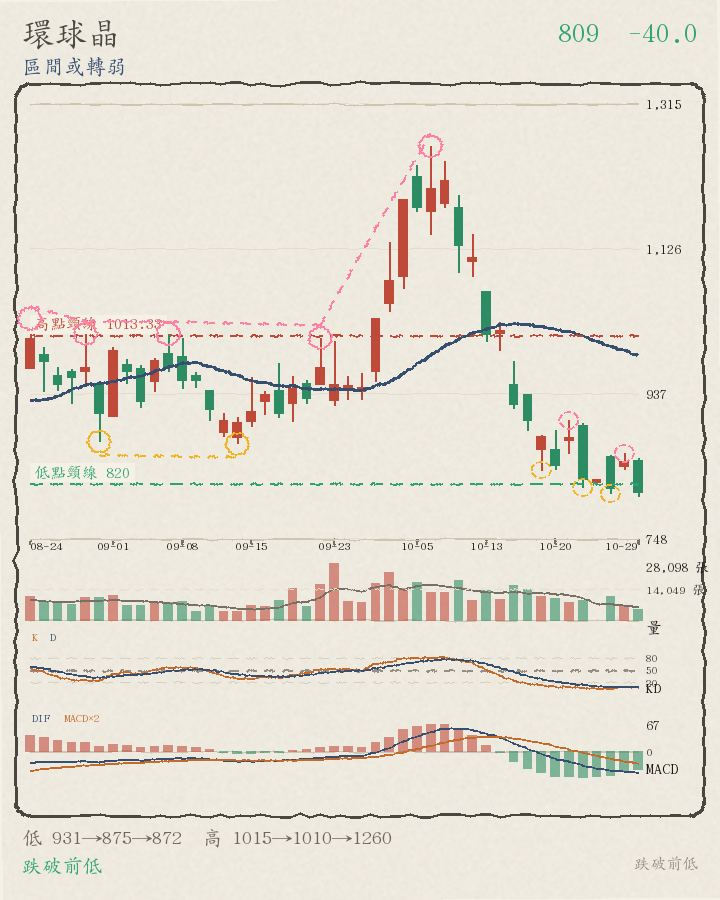
13:31 盤中 814（-1.45%），比加權指數弱 1.45 個百分點、跌破月線 1013.05，離高點頸線 1018.75 還差 20.1%，轉折還沒走出明顯方向。
- 月線位置：現價 814 在月線 1013.05 之下（-19.6%）；5 日線 866.8 也在月線之下（短均在下）；月線向下
- 量能：以已過交易時間推估，今天成交量約是 20 日均量的 0.80 倍（量平），比 20 日均量少很多
- 關鍵價位：已跌破前一個轉折低點；高點頸線 1018.75 還在現價上方 20.1%；前一交易日高點 898（低於 9.4%）；今天盤中高點 857（低於 5.0%）；今天盤中低點 807（高於 0.9%）
- 轉折結構：低點 931、875、872 與高點 1015、1010、1260 都沒有明顯遞增，屬於區間震盪或轉弱；還沒確認的轉折低點 10-19 838、10-22 815；還沒確認的轉折高點 10-06 1260、10-21 903（圖上虛線小圈）
富喬 1815 上櫃
130 -9.0（-6.47%）
上升趨勢（底底高＋頭頭高） 盤中成交值 91.87 億・全榜第 27 名（上櫃第 4 名）・相對大盤 -6.47
好條件 3/7：月線向上、底底高、頭頭高
不好條件 4/7：今日下跌、相對大盤弱、在月線之下、跌破昨日低點
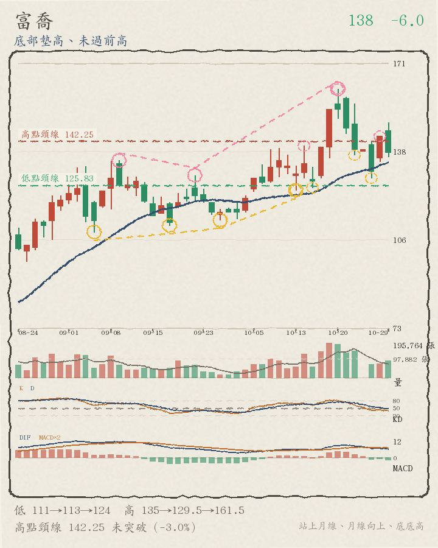
13:31 盤中 130（-6.47%），比加權指數弱 6.47 個百分點、跌破月線 130.425，離高點頸線 138.33 還差 6.0%，轉折結構仍是底底高＋頭頭高。
- 月線位置：現價 130 在月線 130.425 之下（-0.3%）；5 日線 146.8 也在月線之上（短均在上）；月線向上
- 量能：以已過交易時間推估，今天成交量約是 20 日均量的 0.87 倍（量平），比 20 日均量少一些
- 關鍵價位：高點頸線 138.33 還沒突破，差 6.0%；前一交易日高點 156（低於 16.7%）；今天盤中高點 142（低於 8.5%）；今天盤中低點 128.5（高於 1.2%）
- 轉折結構：低點 111、113、124 一路墊高、高點 89.4284、135、129.5 也一路墊高，是底底高＋頭頭高；還沒確認的轉折低點 10-15 125、10-22 137；還沒確認的轉折高點 10-14 140.5、10-20 161.5（圖上虛線小圈）
緯穎 6669 上市
1950 +110.0（+5.98%）
區間或轉弱 盤中成交值 87.63 億・全榜第 28 名（上市第 24 名）・相對大盤 +5.98
好條件 1/7：攻擊量（量增＋上漲）
不好條件 2/7：在月線之下、月線下彎
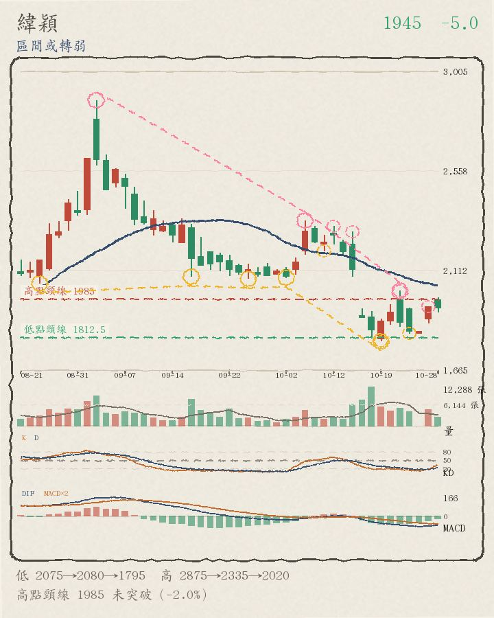
13:31 盤中 1950（+5.98%），比加權指數強 5.98 個百分點、跌破月線 2075.25，離高點頸線 2297.41 還差 15.1%，轉折還沒走出明顯方向。
- 月線位置：現價 1950 在月線 2075.25 之下（-6.0%）；5 日線 1875 也在月線之下（短均在下）；月線向下
- 量能：以已過交易時間推估，今天成交量約是 20 日均量的 1.14 倍（量增），比 20 日均量大一些；上漲又量增，量價配合
- 關鍵價位：高點頸線 2297.41 還沒突破，差 15.1%；前一交易日高點 1945（高於 0.3%）；今天盤中高點 1950（高於 0.0%）；今天盤中低點 1875（高於 4.0%）
- 轉折結構：低點 2075、2080、1795 與高點 2259.63、2875、2335 都沒有明顯遞增，屬於區間震盪或轉弱；還沒確認的轉折低點 10-19 1795、10-22 1830；還沒確認的轉折高點 10-14 2285、10-21 2020（圖上虛線小圈）
量增
↑ 回上方清單
貿聯-KY 3665 上市
1730 -145.0（-7.73%）
高點墊高、底部不穩 盤中成交值 86.08 億・全榜第 29 名（上市第 25 名）・相對大盤 -7.73
好條件 1/7：頭頭高
不好條件 7/7：跌破前低、今日下跌、相對大盤弱、在月線之下、貼近今日低點（1% 內）、跌破昨日低點、月線下彎

13:31 盤中 1730（-7.73%），比加權指數弱 7.73 個百分點、跌破月線 2257.5，離高點頸線 2378.33 還差 27.3%，高點還在墊高（但底部沒同步墊高）。
- 月線位置：現價 1730 在月線 2257.5 之下（-23.4%）；5 日線 1948 也在月線之下（短均在下）；月線向下
- 量能：以已過交易時間推估，今天成交量約是 20 日均量的 1.47 倍（量增），比 20 日均量大不少；下跌卻量增，量價背離
- 關鍵價位：已跌破前一個轉折低點；高點頸線 2378.33 還在現價上方 27.3%；前一交易日高點 1985（低於 12.8%）；今天盤中高點 1890（低於 8.5%）；今天盤中低點 1715（高於 0.9%）
- 轉折結構：高點 2360、2375、2685 墊高（頭頭高），但低點 2095、1930、1810 沒有同步墊高；還沒確認的轉折低點 10-20 1920、10-22 1875；還沒確認的轉折高點 10-08 2400、10-21 2080（圖上虛線小圈）
禾伸堂 3026 上市
706 -50.0（-6.61%）
高點墊高、底部不穩 盤中成交值 81.68 億・全榜第 30 名（上市第 26 名）・相對大盤 -6.61
好條件 2/7：月線向上、頭頭高
不好條件 6/7：跌破前低、今日下跌、相對大盤弱、在月線之下、貼近今日低點（1% 內）、跌破昨日低點
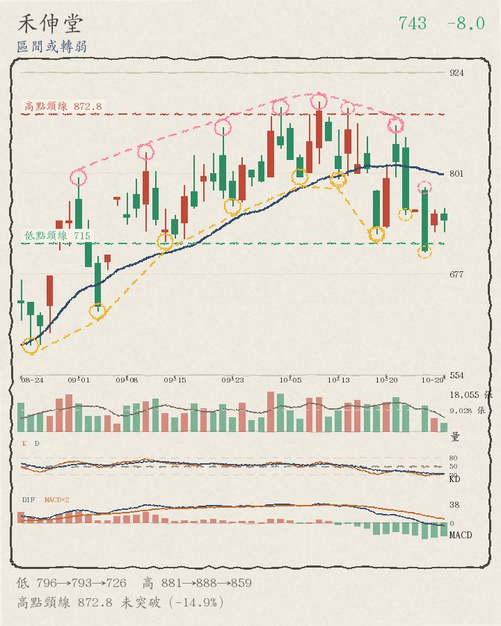
13:31 盤中 706（-6.61%），比加權指數弱 6.61 個百分點、跌破月線 808.9，離高點頸線 847 還差 16.6%，高點還在墊高（但底部沒同步墊高）。
- 月線位置：現價 706 在月線 808.9 之下（-12.7%）；5 日線 781.2 也在月線之下（短均在下）；月線向上
- 量能：以已過交易時間推估，今天成交量約是 20 日均量的 1.03 倍（量平），跟 20 日均量差不多
- 關鍵價位：已跌破前一個轉折低點；高點頸線 847 還在現價上方 16.6%；前一交易日高點 844（低於 16.4%）；今天盤中高點 783（低於 9.8%）；今天盤中低點 704（高於 0.3%）
- 轉折結構：高點 856、881、888 墊高（頭頭高），但低點 796、793、726 沒有同步墊高；還沒確認的轉折低點 10-19 726、10-22 750；還沒確認的轉折高點 10-14 880、10-21 859（圖上虛線小圈）
台玻 1802 上市
65.2 -1.9（-2.83%）
高點墊高、底部不穩 盤中成交值 79.73 億・全榜第 31 名（上市第 27 名）・相對大盤 -2.83
好條件 3/7：站上月線、月線向上、頭頭高
不好條件 4/7：今日下跌、相對大盤弱、貼近今日低點（1% 內）、跌破昨日低點
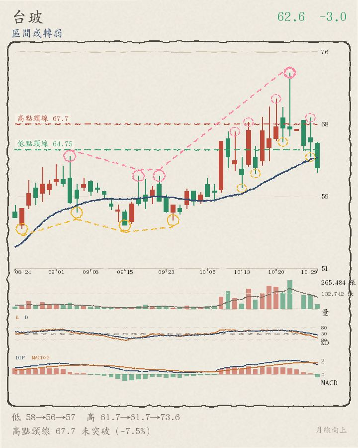
13:31 盤中 65.2（-2.83%），比加權指數弱 2.83 個百分點、站上月線 62.445，離高點頸線 67.17 還差 2.9%，高點還在墊高（但底部沒同步墊高）。
- 月線位置：現價 65.2 在月線 62.445 之上（+4.4%）；5 日線 66.92 也在月線之上（短均在上）；月線向上
- 量能：以已過交易時間推估，今天成交量約是 20 日均量的 1.57 倍（爆量），比 20 日均量大不少；下跌卻量增，量價背離
- 關鍵價位：高點頸線 67.17 還沒突破，差 2.9%；前一交易日高點 73.6（低於 11.4%）；今天盤中高點 68.1（低於 4.3%）；今天盤中低點 64.6（高於 0.9%）
- 轉折結構：高點 64、61.7、61.7 墊高（頭頭高），但低點 57.5、56、56.6 沒有同步墊高；還沒確認的轉折低點 10-15 62、10-21 65.6；還沒確認的轉折高點 10-20 70.6、10-22 73.6（圖上虛線小圈）
奇鋐 3017 上市
3155 +10.0（+0.32%）
區間或轉弱 盤中成交值 77.87 億・全榜第 32 名（上市第 28 名）・相對大盤 +0.32
好條件 1/7：月線向上
不好條件 1/7：在月線之下

13:31 盤中 3155（+0.32%），比加權指數強 0.32 個百分點、跌破月線 3393，離高點頸線 3408.33 還差 7.4%，轉折還沒走出明顯方向。
- 月線位置：現價 3155 在月線 3393 之下（-7.0%）；5 日線 3268 也在月線之下（短均在下）；月線向上
- 量能：以已過交易時間推估，今天成交量約是 20 日均量的 0.85 倍（量平），比 20 日均量少一些；上漲但量縮，量價背離
- 關鍵價位：高點頸線 3408.33 還沒突破，差 7.4%；前一交易日高點 3395（低於 7.1%）；今天盤中高點 3320（低於 5.0%）；今天盤中低點 3050（高於 3.4%）
- 轉折結構：低點 3100、3285、3050 與高點 3595、3600、3700 都沒有明顯遞增，屬於區間震盪或轉弱；還沒確認的轉折低點 10-15 3050、10-22 3145；還沒確認的轉折高點 10-16 3355、10-21 3450（圖上虛線小圈）
智邦 2345 上市
1760 -15.0（-0.85%）
區間或轉弱 盤中成交值 74.64 億・全榜第 33 名（上市第 29 名）・相對大盤 -0.85
好條件 1/7：月線向上
不好條件 5/7：跌破前低、今日下跌、相對大盤弱、在月線之下、跌破昨日低點

13:31 盤中 1760（-0.85%），比加權指數弱 0.85 個百分點、跌破月線 1953.75，離高點頸線 2055 還差 14.4%，轉折還沒走出明顯方向。
- 月線位置：現價 1760 在月線 1953.75 之下（-9.9%）；5 日線 1909 也在月線之下（短均在下）；月線向上
- 量能：以已過交易時間推估，今天成交量約是 20 日均量的 0.95 倍（量平），跟 20 日均量差不多
- 關鍵價位：已跌破前一個轉折低點；高點頸線 2055 還在現價上方 14.4%；前一交易日高點 1880（低於 6.4%）；今天盤中高點 1805（低於 2.5%）；今天盤中低點 1740（高於 1.1%）
- 轉折結構：低點 1770、1970、1910 與高點 2235、1955、2145 都沒有明顯遞增，屬於區間震盪或轉弱；還沒確認的轉折低點 10-19 1910、10-22 1770；還沒確認的轉折高點 10-19 2055、10-20 2055（圖上虛線小圈）
聯亞 3081 上櫃
2500 +125.0（+5.26%）
高點墊高、底部不穩 盤中成交值 74.3 億・全榜第 34 名（上櫃第 5 名）・相對大盤 +5.26
好條件 1/7：頭頭高
不好條件 3/7：跌破前低、在月線之下、月線下彎
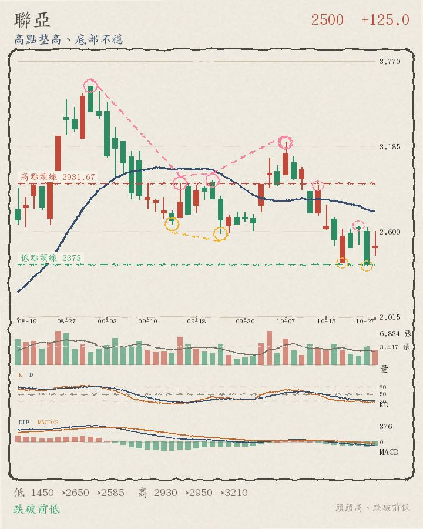
13:31 盤中 2500（+5.26%），比加權指數強 5.26 個百分點、跌破月線 2751.5，離高點頸線 2931.67 還差 14.7%，高點還在墊高（但底部沒同步墊高）。
- 月線位置：現價 2500 在月線 2751.5 之下（-9.1%）；5 日線 2521 也在月線之下（短均在下）；月線向下
- 量能：以已過交易時間推估，今天成交量約是 20 日均量的 1.00 倍（量平），跟 20 日均量差不多
- 關鍵價位：已跌破前一個轉折低點；高點頸線 2931.67 還在現價上方 14.7%；前一交易日高點 2625（低於 4.8%）；今天盤中高點 2600（低於 3.8%）；今天盤中低點 2435（高於 2.7%）
- 轉折結構：高點 2930、2950、3210 墊高（頭頭高），但低點 1450、2650、2585 沒有同步墊高；還沒確認的轉折低點 10-19 2385、10-22 2365；還沒確認的轉折高點 10-14 2915、10-21 2640（圖上虛線小圈）
金像電 2368 上市
1065 -50.0（-4.48%）
區間或轉弱 盤中成交值 73.03 億・全榜第 35 名（上市第 30 名）・相對大盤 -4.48
好條件 1/7：月線向上
不好條件 6/7：跌破前低、今日下跌、相對大盤弱、在月線之下、貼近今日低點（1% 內）、跌破昨日低點
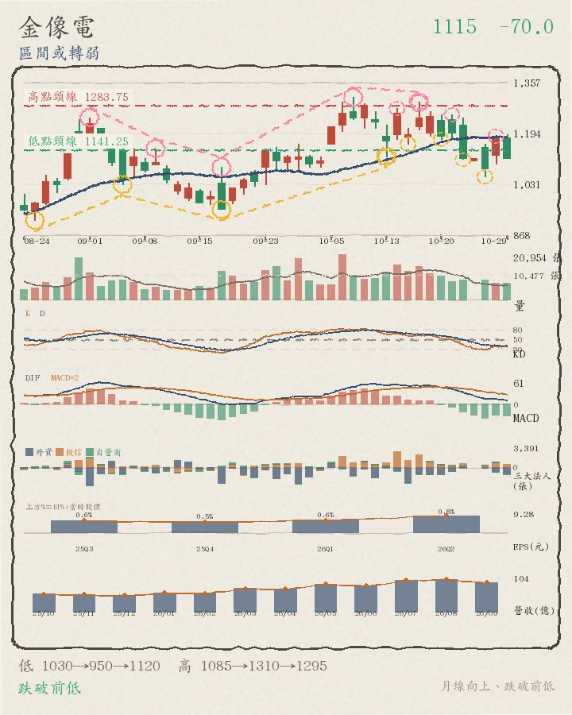
13:31 盤中 1065（-4.48%），比加權指數弱 4.48 個百分點、跌破月線 1178.75，離高點頸線 1283.75 還差 17.0%，轉折還沒走出明顯方向。
- 月線位置：現價 1065 在月線 1178.75 之下（-9.7%）；5 日線 1198 也在月線之上（短均在上）；月線向上
- 量能：以已過交易時間推估，今天成交量約是 20 日均量的 0.59 倍（量縮），比 20 日均量少很多
- 關鍵價位：已跌破前一個轉折低點；高點頸線 1283.75 還在現價上方 17.0%；前一交易日高點 1245（低於 14.5%）；今天盤中高點 1160（低於 8.2%）；今天盤中低點 1055（高於 0.9%）
- 轉折結構：低點 1030、950、1120 與高點 1085、1310、1295 都沒有明顯遞增，屬於區間震盪或轉弱；還沒確認的轉折低點 10-20 1175、10-22 1110；還沒確認的轉折高點 10-16 1295、10-21 1255（圖上虛線小圈）
高力 8996 上市
1465 -95.0（-6.09%）
高點墊高、底部不穩 盤中成交值 69.62 億・全榜第 36 名（上市第 31 名）・相對大盤 -6.09
好條件 2/7：月線向上、頭頭高
不好條件 4/7：今日下跌、相對大盤弱、在月線之下、跌破昨日低點

13:31 盤中 1465（-6.09%），比加權指數弱 6.09 個百分點、跌破月線 1602，離高點頸線 1785 還差 17.9%，高點還在墊高（但底部沒同步墊高）。
- 月線位置：現價 1465 在月線 1602 之下（-8.6%）；5 日線 1572 也在月線之下（短均在下）；月線向上
- 量能：以已過交易時間推估，今天成交量約是 20 日均量的 1.25 倍（量增），比 20 日均量大不少；下跌卻量增，量價背離
- 關鍵價位：高點頸線 1785 還沒突破，差 17.9%；前一交易日高點 1770（低於 17.2%）；今天盤中高點 1620（低於 9.6%）；今天盤中低點 1405（高於 4.3%）
- 轉折結構：高點 1655、1665、1800 墊高（頭頭高），但低點 1200、1470、1455 沒有同步墊高；還沒確認的轉折低點 10-19 1455、10-22 1535；還沒確認的轉折高點 10-16 1660、10-22 1770（圖上虛線小圈）
京元電子 2449 上市
269 +6.5（+2.48%）
區間或轉弱 盤中成交值 67.9 億・全榜第 37 名（上市第 32 名）・相對大盤 +2.48
好條件 0/7：無
不好條件 3/7：在月線之下、貼近今日低點（1% 內）、月線下彎
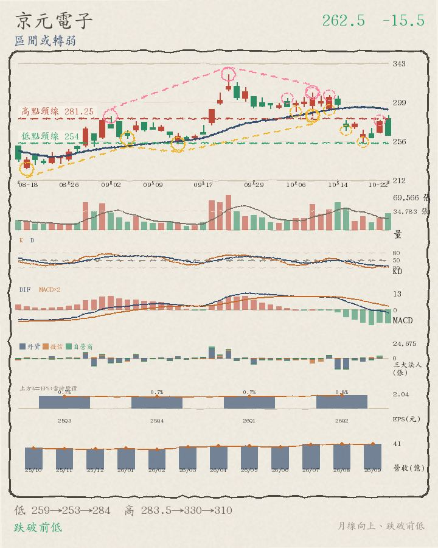
13:31 盤中 269（+2.48%），比加權指數強 2.48 個百分點、跌破月線 291.025，離高點頸線 284 還差 5.3%，轉折還沒走出明顯方向。
- 月線位置：現價 269 在月線 291.025 之下（-7.6%）；5 日線 267.7 也在月線之下（短均在下）；月線向下
- 量能：以已過交易時間推估，今天成交量約是 20 日均量的 0.80 倍（量平），比 20 日均量少很多；上漲但量縮，量價背離
- 關鍵價位：高點頸線 284 還沒突破，差 5.3%；前一交易日高點 284.5（低於 5.4%）；今天盤中高點 278（低於 3.2%）；今天盤中低點 266.5（高於 0.9%）
- 轉折結構：低點 253、284、255 與高點 283.5、330、310 都沒有明顯遞增，屬於區間震盪或轉弱；還沒確認的轉折低點 10-19 255、10-22 262；還沒確認的轉折高點 10-13 307、10-22 284.5（圖上虛線小圈）
量平
↑ 回上方清單
穩懋 3105 上櫃
491 +5.0（+1.03%）
區間或轉弱 盤中成交值 66.2 億・全榜第 38 名（上櫃第 6 名）・相對大盤 +1.03
好條件 2/7：月線向上、突破頸線
不好條件 1/7：在月線之下
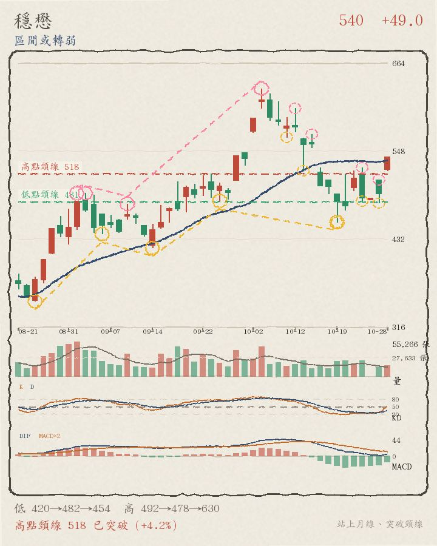
13:31 盤中 491（+1.03%），比加權指數強 1.03 個百分點、跌破月線 534.55，已突破高點頸線 485，轉折還沒走出明顯方向。
- 月線位置：現價 491 在月線 534.55 之下（-8.2%）；5 日線 491.2 也在月線之下（短均在下）；月線向上
- 量能：以已過交易時間推估，今天成交量約是 20 日均量的 0.57 倍（量縮），比 20 日均量少很多；上漲但量縮，量價背離
- 關鍵價位：高點頸線 485 已站上；前一交易日高點 526（低於 6.7%）；今天盤中高點 510（低於 3.7%）；今天盤中低點 479（高於 2.5%）
- 轉折結構：低點 420、482、454 與高點 492、478、630 都沒有明顯遞增，屬於區間震盪或轉弱；還沒確認的轉折低點 10-19 454、10-22 482；還沒確認的轉折高點 10-14 570、10-22 526（圖上虛線小圈）
致茂 2360 上市
1960 -20.0（-1.01%）
高點墊高、底部不穩 盤中成交值 63.09 億・全榜第 39 名（上市第 33 名）・相對大盤 -1.01
好條件 1/7：頭頭高
不好條件 5/7：今日下跌、相對大盤弱、在月線之下、跌破昨日低點、月線下彎
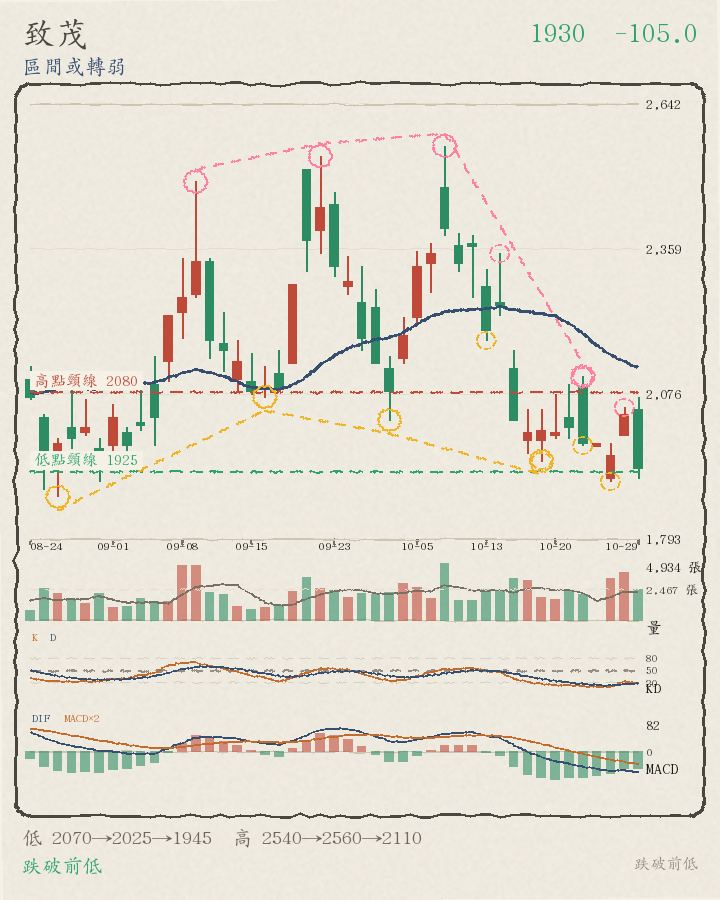
13:31 盤中 1960（-1.01%），比加權指數弱 1.01 個百分點、跌破月線 2194.5，離高點頸線 2497.5 還差 21.5%，高點還在墊高（但底部沒同步墊高）。
- 月線位置：現價 1960 在月線 2194.5 之下（-10.7%）；5 日線 1999 也在月線之下（短均在下）；月線向下
- 量能：以已過交易時間推估，今天成交量約是 20 日均量的 1.23 倍（量增），比 20 日均量大不少；下跌卻量增，量價背離
- 關鍵價位：高點頸線 2497.5 還沒突破，差 21.5%；前一交易日高點 2110（低於 7.1%）；今天盤中高點 1980（低於 1.0%）；今天盤中低點 1905（高於 2.9%）
- 轉折結構：高點 2490、2540、2560 墊高（頭頭高），但低點 2070、2025、1945 沒有同步墊高；還沒確認的轉折低點 10-19 1945、10-22 1975；還沒確認的轉折高點 10-14 2350、10-22 2110（圖上虛線小圈）
台虹 8039 上市
255.5 -10.5（-3.95%）
區間或轉弱 盤中成交值 62.01 億・全榜第 40 名（上市第 34 名）・相對大盤 -3.95
好條件 1/7：月線向上
不好條件 6/7：跌破前低、今日下跌、相對大盤弱、在月線之下、貼近今日低點（1% 內）、跌破昨日低點

13:31 盤中 255.5（-3.95%），比加權指數弱 3.95 個百分點、跌破月線 288.4，離高點頸線 328.5 還差 22.2%，轉折還沒走出明顯方向。
- 月線位置：現價 255.5 在月線 288.4 之下（-11.4%）；5 日線 293.1 也在月線之上（短均在上）；月線向上
- 量能：以已過交易時間推估，今天成交量約是 20 日均量的 0.75 倍（量平），比 20 日均量少很多
- 關鍵價位：已跌破前一個轉折低點；高點頸線 328.5 還在現價上方 22.2%；前一交易日高點 305（低於 16.2%）；今天盤中高點 274（低於 6.8%）；今天盤中低點 253（高於 1.0%）
- 轉折結構：低點 256.5、253、268.5 與高點 364、327.5、331.5 都沒有明顯遞增，屬於區間震盪或轉弱；還沒確認的轉折低點 10-15 283.5、10-22 264.5；還沒確認的轉折高點 10-15 326.5、10-20 328.5（圖上虛線小圈）
群創 3481 上市
46.25 -0.5（-1.07%）
高點墊高、底部不穩 盤中成交值 59.54 億・全榜第 41 名（上市第 35 名）・相對大盤 -1.07
好條件 1/7：頭頭高
不好條件 5/7：今日下跌、相對大盤弱、在月線之下、跌破昨日低點、月線下彎
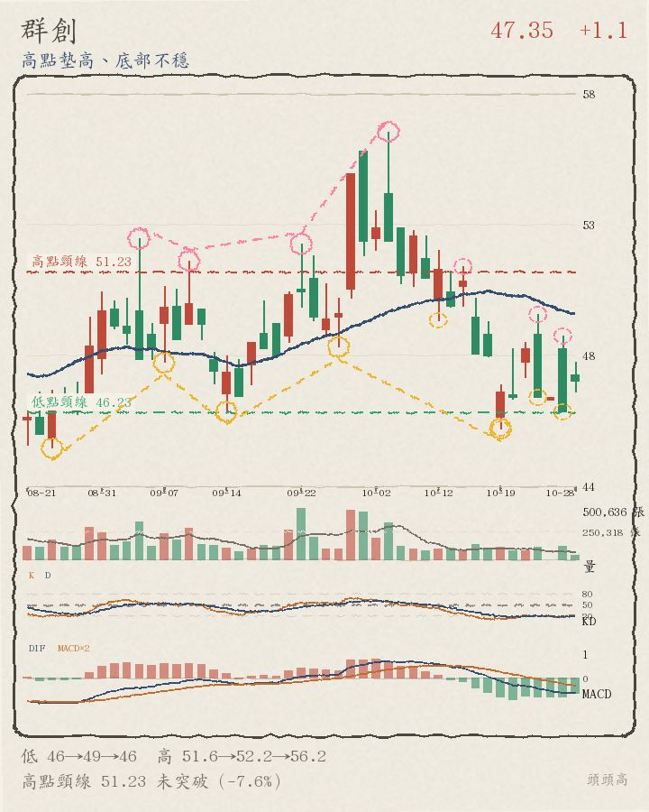
13:31 盤中 46.25（-1.07%），比加權指數弱 1.07 個百分點、跌破月線 50.192，離高點頸線 51.9 還差 10.9%，高點還在墊高（但底部沒同步墊高）。
- 月線位置：現價 46.25 在月線 50.192 之下（-7.8%）；5 日線 47.45 也在月線之下（短均在下）；月線向下
- 量能：以已過交易時間推估，今天成交量約是 20 日均量的 0.67 倍（量縮），比 20 日均量少很多
- 關鍵價位：高點頸線 51.9 還沒突破，差 10.9%；前一交易日高點 49.7（低於 6.9%）；今天盤中高點 48.95（低於 5.5%）；今天盤中低點 46.25（高於 0.0%）
- 轉折結構：高點 51.6、52.2、56.2 墊高（頭頭高），但低點 46.25、48.55、45.65 沒有同步墊高；還沒確認的轉折低點 10-19 45.65、10-22 46.75；還沒確認的轉折高點 10-14 51.4、10-22 49.7（圖上虛線小圈）
台郡 6269 上市
78.4 -0.3（-0.38%）
高點墊高、底部不穩 盤中成交值 57.27 億・全榜第 42 名（上市第 36 名）・相對大盤 -0.38
好條件 3/7：站上月線、月線向上、頭頭高
不好條件 2/7：今日下跌、相對大盤弱
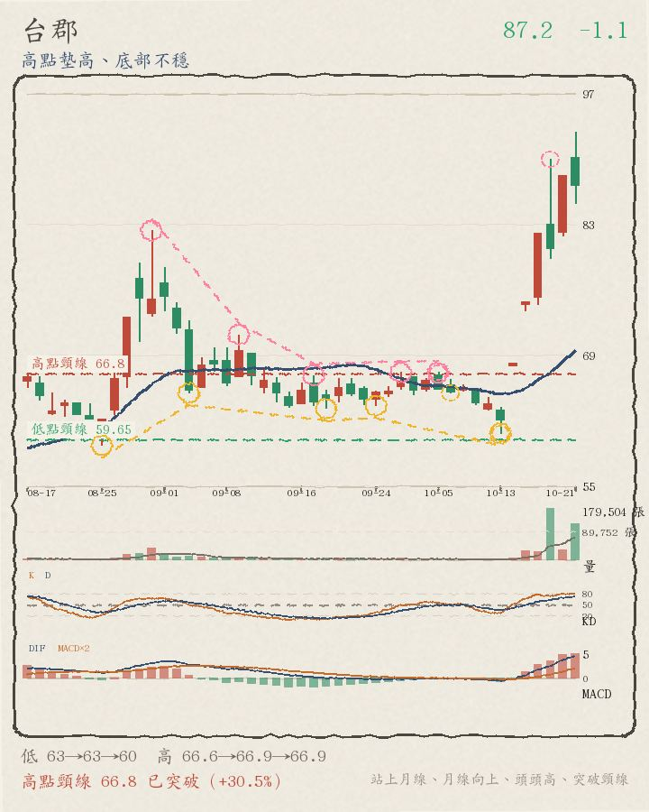
13:31 盤中 78.4（-0.38%），比加權指數弱 0.38 個百分點、站上月線 69.895，離高點頸線 91.5 還差 14.3%，高點還在墊高（但底部沒同步墊高）。
- 月線位置：現價 78.4 在月線 69.895 之上（+12.2%）；5 日線 83.18 也在月線之上（短均在上）；月線向上
- 量能：以已過交易時間推估，今天成交量約是 20 日均量的 3.26 倍（爆量），比 20 日均量大不少；下跌卻量增，量價背離
- 關鍵價位：高點頸線 91.5 還沒突破，差 14.3%；前一交易日高點 91.2（低於 14.0%）；今天盤中高點 85.8（低於 8.6%）；今天盤中低點 77.5（高於 1.2%）
- 轉折結構：高點 66.6、66.9、66.9 墊高（頭頭高），但低點 63、63.3、60.3 沒有同步墊高；還沒確認的轉折低點 10-13 60.3、10-22 78.1；還沒確認的轉折高點 10-19 90、10-21 93（圖上虛線小圈）
騰輝電子-KY 6672 上市
529 -52.0（-8.95%）
上升趨勢（底底高＋頭頭高） 盤中成交值 55 億・全榜第 43 名（上市第 37 名）・相對大盤 -8.95
好條件 4/7：站上月線、月線向上、底底高、頭頭高
不好條件 5/7：跌破前低、今日下跌、相對大盤弱、貼近今日低點（1% 內）、跌破昨日低點
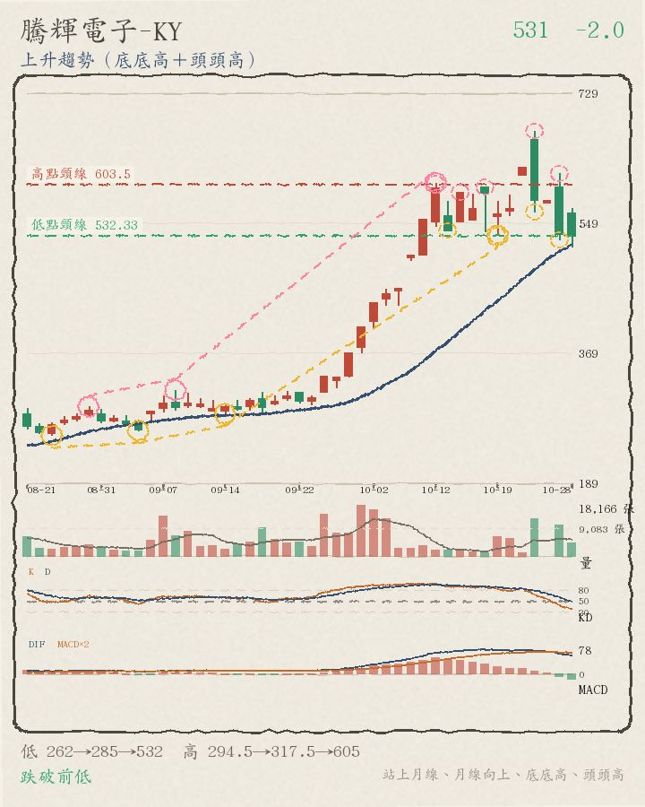
13:31 盤中 529（-8.95%），比加權指數弱 8.95 個百分點、站上月線 484.8，離高點頸線 598.67 還差 11.6%，轉折結構仍是底底高＋頭頭高。
- 月線位置：現價 529 在月線 484.8 之上（+9.1%）；5 日線 586.2 也在月線之上（短均在上）；月線向上
- 量能：以已過交易時間推估，今天成交量約是 20 日均量的 1.68 倍（爆量），比 20 日均量大不少；下跌卻量增，量價背離
- 關鍵價位：已跌破前一個轉折低點；高點頸線 598.67 還在現價上方 11.6%；前一交易日高點 677（低於 21.9%）；今天盤中高點 618（低於 14.4%）；今天盤中低點 526（高於 0.6%）
- 轉折結構：低點 261.5、285、532 一路墊高、高點 294.5、317.5、605 也一路墊高，是底底高＋頭頭高；還沒確認的轉折低點 10-19 532、10-22 565；還沒確認的轉折高點 10-16 599、10-22 677（圖上虛線小圈）
川湖 2059 上市
9810 +55.0（+0.56%）
區間或轉弱 盤中成交值 54.64 億・全榜第 44 名（上市第 38 名）・相對大盤 +0.56
好條件 1/7：守住今日高檔（距今日高點 1% 內）
不好條件 2/7：在月線之下、月線下彎
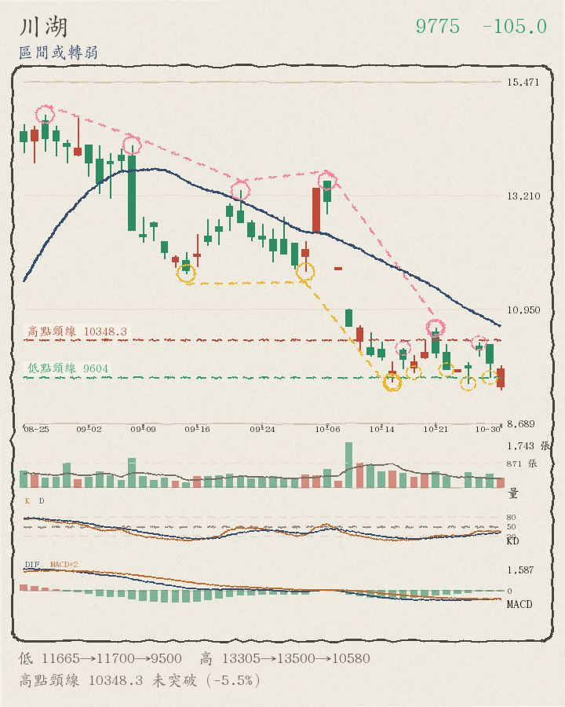
13:31 盤中 9810（+0.56%），比加權指數強 0.56 個百分點、跌破月線 11229.8，離高點頸線 10377.5 還差 5.5%，轉折還沒走出明顯方向。
- 月線位置：現價 9810 在月線 11229.8 之下（-12.6%）；5 日線 9962 也在月線之下（短均在下）；月線向下
- 量能：以已過交易時間推估，今天成交量約是 20 日均量的 0.99 倍（量平），跟 20 日均量差不多
- 關鍵價位：高點頸線 10377.5 還沒突破，差 5.5%；前一交易日高點 10255（低於 4.3%）；今天盤中高點 9890（低於 0.8%）；今天盤中低點 9475（高於 3.5%）
- 轉折結構：低點 11665、11700、9500 與高點 14200、13305、13500 都沒有明顯遞增，屬於區間震盪或轉弱；還沒確認的轉折低點 10-19 9690、10-22 9755；還沒確認的轉折高點 10-16 10175、10-21 10580（圖上虛線小圈）
量平
↑ 回上方清單
台表科 6278 上市
278.5 -12.0（-4.13%）
上升趨勢（底底高＋頭頭高） 盤中成交值 51.3 億・全榜第 45 名（上市第 39 名）・相對大盤 -4.13
好條件 4/7：站上月線、月線向上、底底高、頭頭高
不好條件 4/7：今日下跌、相對大盤弱、貼近今日低點（1% 內）、跌破昨日低點
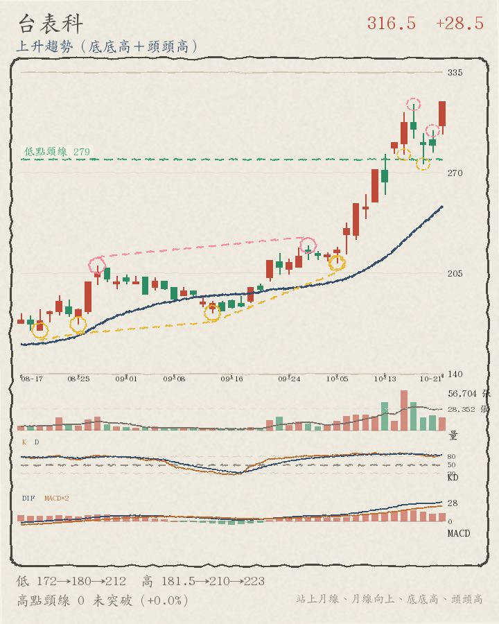
13:31 盤中 278.5（-4.13%），比加權指數弱 4.13 個百分點、站上月線 253.35，離高點頸線 315.83 還差 11.8%，轉折結構仍是底底高＋頭頭高。
- 月線位置：現價 278.5 在月線 253.35 之上（+9.9%）；5 日線 296.6 也在月線之上（短均在上）；月線向上
- 量能：以已過交易時間推估，今天成交量約是 20 日均量的 1.00 倍（量平），跟 20 日均量差不多
- 關鍵價位：高點頸線 315.83 還沒突破，差 11.8%；前一交易日高點 316.5（低於 12.0%）；今天盤中高點 302.5（低於 7.9%）；今天盤中低點 276.5（高於 0.7%）
- 轉折結構：低點 179.5、211.5、276 一路墊高、高點 181.5、210、223 也一路墊高，是底底高＋頭頭高；還沒確認的轉折低點 10-19 276、10-22 288.5；還沒確認的轉折高點 10-21 316.5、10-22 316.5（圖上虛線小圈）
華通 2313 上市
216 -8.5（-3.79%）
上升趨勢（底底高＋頭頭高） 盤中成交值 51.18 億・全榜第 46 名（上市第 40 名）・相對大盤 -3.79
好條件 3/7：月線向上、底底高、頭頭高
不好條件 6/7：跌破前低、今日下跌、相對大盤弱、在月線之下、貼近今日低點（1% 內）、跌破昨日低點

13:31 盤中 216（-3.79%），比加權指數弱 3.79 個百分點、跌破月線 237.225，離高點頸線 259.5 還差 16.8%，轉折結構仍是底底高＋頭頭高。
- 月線位置：現價 216 在月線 237.225 之下（-8.9%）；5 日線 240.9 也在月線之上（短均在上）；月線向上
- 量能：以已過交易時間推估，今天成交量約是 20 日均量的 0.77 倍（量平），比 20 日均量少很多
- 關鍵價位：已跌破前一個轉折低點；高點頸線 259.5 還在現價上方 16.8%；前一交易日高點 248.5（低於 13.1%）；今天盤中高點 229（低於 5.7%）；今天盤中低點 215（高於 0.5%）
- 轉折結構：低點 213、219、228 一路墊高、高點 258、235、261 也一路墊高，是底底高＋頭頭高；還沒確認的轉折低點 10-15 228、10-22 224；還沒確認的轉折高點 10-14 252.5、10-21 266（圖上虛線小圈）
信驊 5274 上櫃
15955 -55.0（-0.34%）
區間或轉弱 盤中成交值 50.26 億・全榜第 47 名（上櫃第 7 名）・相對大盤 -0.34
好條件 0/7：無
不好條件 5/7：今日下跌、相對大盤弱、在月線之下、貼近今日低點（1% 內）、月線下彎
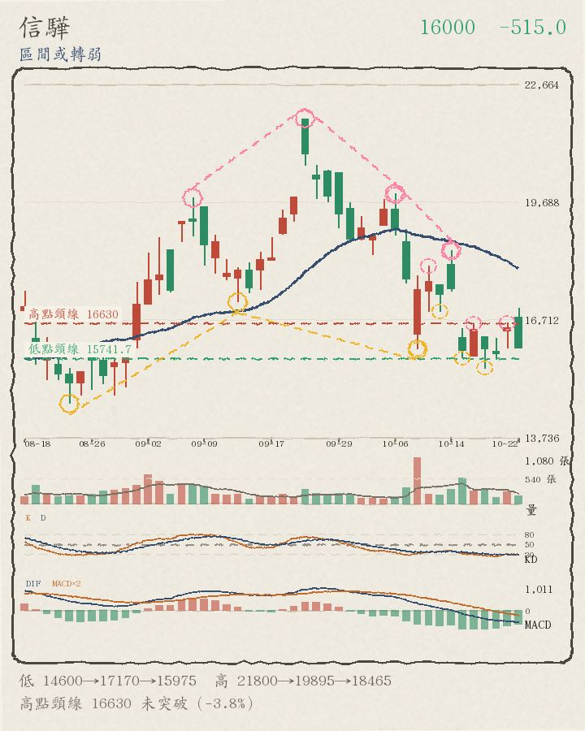
13:31 盤中 15955（-0.34%），比加權指數弱 0.34 個百分點、跌破月線 18008，離高點頸線 16810 還差 5.1%，轉折還沒走出明顯方向。
- 月線位置：現價 15955 在月線 18008 之下（-11.4%）；5 日線 16177 也在月線之下（短均在下）；月線向下
- 量能：以已過交易時間推估，今天成交量約是 20 日均量的 1.12 倍（量增），比 20 日均量大一些；下跌卻量增，量價背離
- 關鍵價位：高點頸線 16810 還沒突破，差 5.1%；前一交易日高點 17000（低於 6.1%）；今天盤中高點 16850（低於 5.3%）；今天盤中低點 15800（高於 1.0%）
- 轉折結構：低點 17170、15975、15500 與高點 21800、19895、18465 都沒有明顯遞增，屬於區間震盪或轉弱；還沒確認的轉折低點 10-19 15500、10-22 15800；還沒確認的轉折高點 10-16 16620、10-22 17000（圖上虛線小圈）
量增
↑ 回上方清單
群聯 8299 上櫃
1905 +25.0（+1.33%）
區間或轉弱 盤中成交值 48.23 億・全榜第 48 名（上櫃第 8 名）・相對大盤 +1.33
好條件 0/7：無
不好條件 2/7：在月線之下、月線下彎
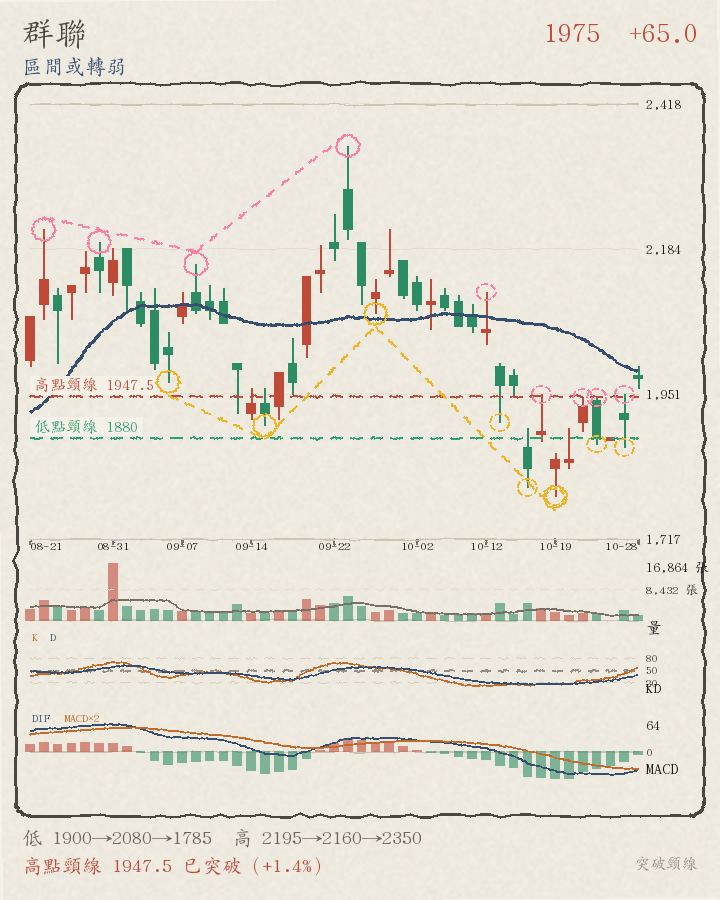
13:31 盤中 1905（+1.33%），比加權指數強 1.33 個百分點、跌破月線 2025.5，離高點頸線 1946.67 還差 2.1%，轉折還沒走出明顯方向。
- 月線位置：現價 1905 在月線 2025.5 之下（-6.0%）；5 日線 1878 也在月線之下（短均在下）；月線向下
- 量能：以已過交易時間推估，今天成交量約是 20 日均量的 0.88 倍（量平），比 20 日均量少一些
- 關鍵價位：高點頸線 1946.67 還沒突破，差 2.1%；前一交易日高點 1945（低於 2.1%）；今天盤中高點 1950（低於 2.3%）；今天盤中低點 1865（高於 2.1%）
- 轉折結構：低點 1900、2080、1785 與高點 2195、2160、2350 都沒有明顯遞增，屬於區間震盪或轉弱；還沒確認的轉折低點 10-19 1785、10-22 1870；還沒確認的轉折高點 10-21 1945、10-22 1945（圖上虛線小圈）
量平
↑ 回上方清單
緯創 3231 上市
190.5 +0.5（+0.26%）
高點墊高、底部不穩 盤中成交值 42.6 億・全榜第 49 名（上市第 41 名）・相對大盤 +0.26
好條件 3/7：站上月線、月線向上、頭頭高
不好條件 0/7：無
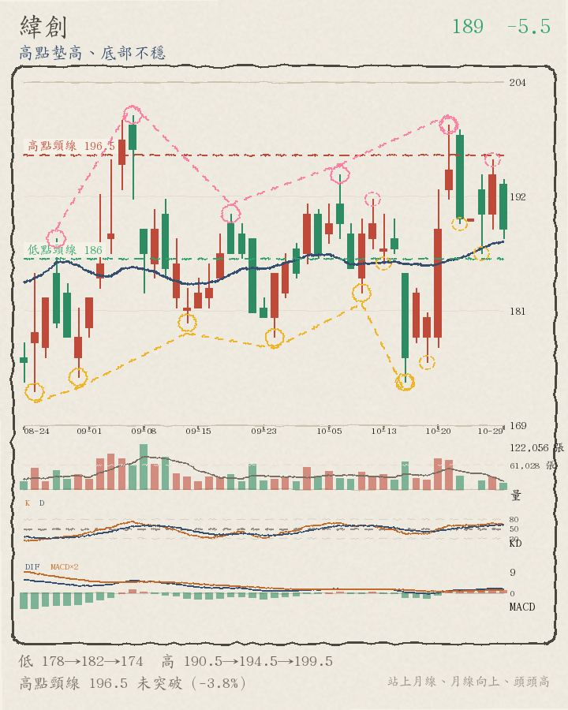
13:31 盤中 190.5（+0.26%），比加權指數強 0.26 個百分點、站上月線 186.025，離高點頸線 200 還差 4.7%，高點還在墊高（但底部沒同步墊高）。
- 月線位置：現價 190.5 在月線 186.025 之上（+2.4%）；5 日線 187.3 也在月線之上（短均在上）；月線向上
- 量能：以已過交易時間推估，今天成交量約是 20 日均量的 0.55 倍（量縮），比 20 日均量少很多；上漲但量縮，量價背離
- 關鍵價位：高點頸線 200 還沒突破，差 4.7%；前一交易日高點 199（低於 4.3%）；今天盤中高點 194.5（低於 2.1%）；今天盤中低點 186.5（高於 2.1%）
- 轉折結構：高點 200.5、190.5、194.5 墊高（頭頭高），但低點 178、182.5、173.5 沒有同步墊高；還沒確認的轉折低點 10-19 175.5、10-22 189.5；還沒確認的轉折高點 10-12 192、10-21 199.5（圖上虛線小圈）
廣達 2382 上市
327.5 +5.5（+1.71%）
區間或轉弱 盤中成交值 41.67 億・全榜第 50 名（上市第 42 名）・相對大盤 +1.71
好條件 2/7：突破頸線、攻擊量（量增＋上漲）
不好條件 2/7：在月線之下、月線下彎
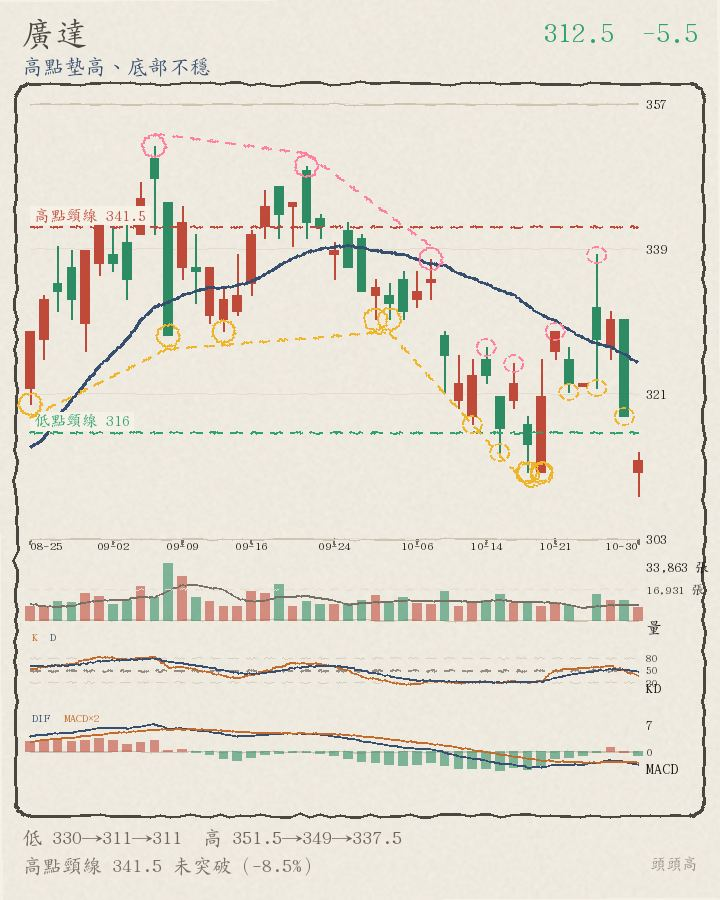
13:31 盤中 327.5（+1.71%），比加權指數強 1.71 個百分點、跌破月線 328.75，已突破高點頸線 326.5，轉折還沒走出明顯方向。
- 月線位置：現價 327.5 在月線 328.75 之下（-0.4%）；5 日線 321.5 也在月線之下（短均在下）；月線向下
- 量能：以已過交易時間推估，今天成交量約是 20 日均量的 1.18 倍（量增），比 20 日均量大不少；上漲又量增，量價配合
- 關鍵價位：高點頸線 326.5 已站上；前一交易日高點 326.5（高於 0.3%）；今天盤中高點 338（低於 3.1%）；今天盤中低點 321.5（高於 1.9%）
- 轉折結構：低點 330、330、311 與高點 351.5、349、337.5 都沒有明顯遞增，屬於區間震盪或轉弱；還沒確認的轉折低點 10-20 311、10-22 321；還沒確認的轉折高點 10-16 324.5、10-21 328.5（圖上虛線小圈）
尖點 8021 上市
433 -46.0（-9.60%）
區間或轉弱 盤中成交值 40.69 億・全榜第 51 名（上市第 43 名）・相對大盤 -9.60
好條件 1/7：月線向上
不好條件 6/7：跌破前低、今日下跌、相對大盤弱、在月線之下、貼近今日低點（1% 內）、跌破昨日低點

13:31 盤中 433（-9.60%），比加權指數弱 9.60 個百分點、跌破月線 515.107，離高點頸線 541.33 還差 20.0%，轉折還沒走出明顯方向。
- 月線位置：現價 433 在月線 515.107 之下（-15.9%）；5 日線 497.6 也在月線之下（短均在下）；月線向上
- 量能：以已過交易時間推估，今天成交量約是 20 日均量的 1.67 倍（爆量），比 20 日均量大不少；下跌卻量增，量價背離
- 關鍵價位：已跌破前一個轉折低點；高點頸線 541.33 還在現價上方 20.0%；前一交易日高點 535（低於 19.1%）；今天盤中高點 483.5（低於 10.4%）；今天盤中低點 431.5（高於 0.3%）
- 轉折結構：低點 413、410.5、466 與高點 481、481、584 都沒有明顯遞增，屬於區間震盪或轉弱；還沒確認的轉折低點 10-19 466、10-22 479；還沒確認的轉折高點 10-19 541、10-22 535（圖上虛線小圈）
光寶科 2301 上市
252.5 -3.0（-1.17%）
區間或轉弱 盤中成交值 40.16 億・全榜第 52 名（上市第 44 名）・相對大盤 -1.17
好條件 0/7：無
不好條件 6/7：跌破前低、今日下跌、相對大盤弱、在月線之下、跌破昨日低點、月線下彎

13:31 盤中 252.5（-1.17%），比加權指數弱 1.17 個百分點、跌破月線 280.025，離高點頸線 302 還差 16.4%，轉折還沒走出明顯方向。
- 月線位置：現價 252.5 在月線 280.025 之下（-9.8%）；5 日線 261.9 也在月線之下（短均在下）；月線向下
- 量能：以已過交易時間推估，今天成交量約是 20 日均量的 1.09 倍（量平），比 20 日均量大一些
- 關鍵價位：已跌破前一個轉折低點；高點頸線 302 還在現價上方 16.4%；前一交易日高點 266.5（低於 5.3%）；今天盤中高點 263（低於 4.0%）；今天盤中低點 248（高於 1.8%）
- 轉折結構：低點 278、278、254 與高點 328、299.5、304.5 都沒有明顯遞增，屬於區間震盪或轉弱；還沒確認的轉折低點 10-19 254、10-22 254.5；還沒確認的轉折高點 10-07 304.5、10-21 269（圖上虛線小圈）
欣銓 3264 上櫃
249.5 +3.0（+1.22%）
高點墊高、底部不穩 盤中成交值 38.5 億・全榜第 53 名（上櫃第 9 名）・相對大盤 +1.22
好條件 2/7：月線向上、頭頭高
不好條件 1/7：在月線之下
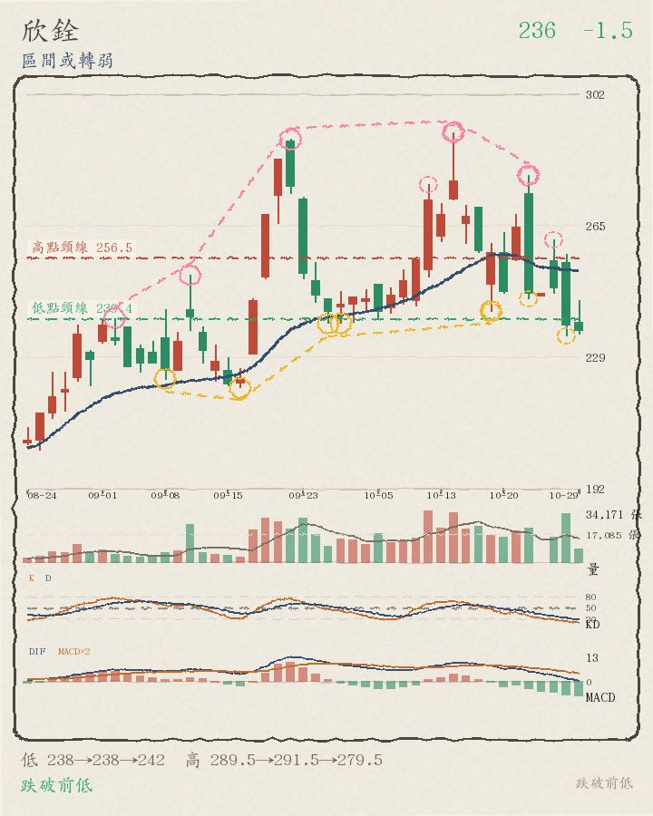
13:31 盤中 249.5（+1.22%），比加權指數強 1.22 個百分點、跌破月線 255.275，離高點頸線 286.83 還差 13.0%，高點還在墊高（但底部沒同步墊高）。
- 月線位置：現價 249.5 在月線 255.275 之下（-2.3%）；5 日線 255 也在月線之下（短均在下）；月線向上
- 量能：以已過交易時間推估，今天成交量約是 20 日均量的 0.77 倍（量平），比 20 日均量少很多；上漲但量縮，量價背離
- 關鍵價位：高點頸線 286.83 還沒突破，差 13.0%；前一交易日高點 279.5（低於 10.7%）；今天盤中高點 261.5（低於 4.6%）；今天盤中低點 246.5（高於 1.2%）
- 轉折結構：高點 251.5、289.5、291.5 墊高（頭頭高），但低點 238、238、241.5 沒有同步墊高；還沒確認的轉折低點 10-19 241.5、10-22 245；還沒確認的轉折高點 10-14 291.5、10-22 279.5（圖上虛線小圈）
華碩 2357 上市
967 +21.0（+2.22%）
區間或轉弱 盤中成交值 38.03 億・全榜第 54 名（上市第 45 名）・相對大盤 +2.22
好條件 3/7：月線向上、攻擊量（量增＋上漲）、守住今日高檔（距今日高點 1% 內）
不好條件 1/7：在月線之下
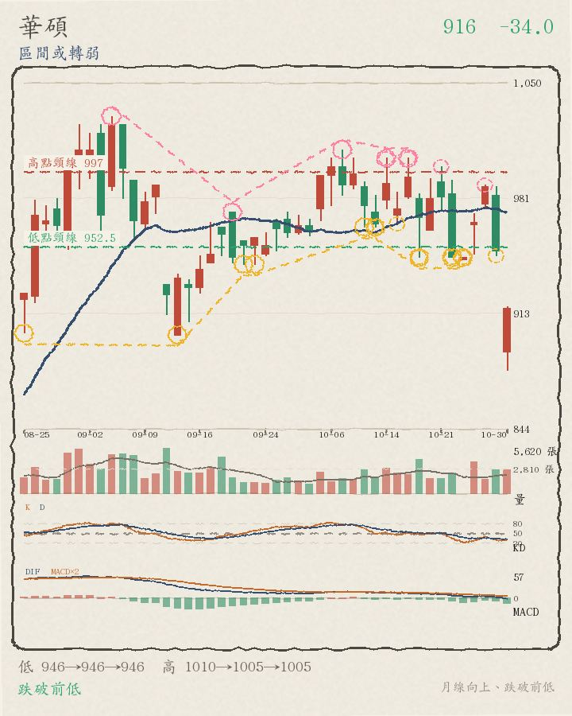
13:31 盤中 967（+2.22%），比加權指數強 2.22 個百分點、跌破月線 973.8，離高點頸線 1010 還差 4.3%，轉折還沒走出明顯方向。
- 月線位置：現價 967 在月線 973.8 之下（-0.7%）；5 日線 974.6 也在月線之上（短均在上）；月線向上
- 量能：以已過交易時間推估，今天成交量約是 20 日均量的 1.95 倍（爆量），比 20 日均量大不少；上漲又量增，量價配合
- 關鍵價位：高點頸線 1010 還沒突破，差 4.3%；前一交易日高點 992（低於 2.5%）；今天盤中高點 972（低於 0.5%）；今天盤中低點 948（高於 2.0%）
- 轉折結構：低點 964、964、946 與高點 1010、1005、1005 都沒有明顯遞增，屬於區間震盪或轉弱；還沒確認的轉折低點 10-19 946、10-22 946；還沒確認的轉折高點 10-16 1005、10-21 1000（圖上虛線小圈）
世芯-KY 3661 上市
3495 +0.0（+0.00%）
區間或轉弱 盤中成交值 35.89 億・全榜第 55 名（上市第 46 名）・相對大盤 +0.00
好條件 1/7：月線向上
不好條件 1/7：在月線之下
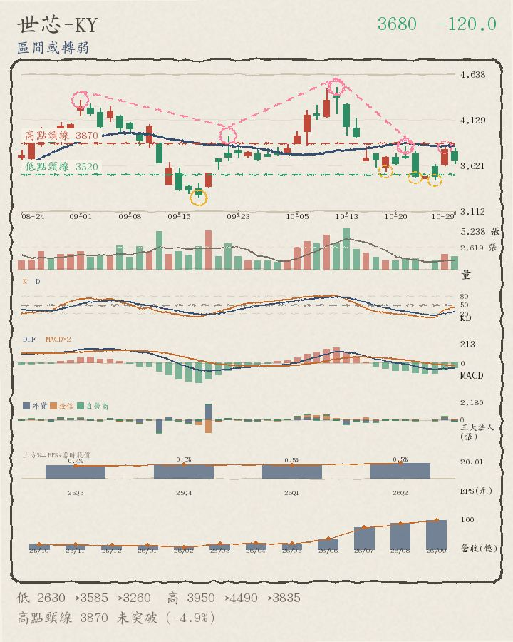
13:31 盤中 3495（+0.00%），比加權指數強 0.00 個百分點、跌破月線 3862.5，離高點頸線 3777.5 還差 7.5%，轉折還沒走出明顯方向。
- 月線位置：現價 3495 在月線 3862.5 之下（-9.5%）；5 日線 3649 也在月線之下（短均在下）；月線向上
- 量能：以已過交易時間推估，今天成交量約是 20 日均量的 0.47 倍（量縮），比 20 日均量少很多
- 關鍵價位：高點頸線 3777.5 還沒突破，差 7.5%；前一交易日高點 3780（低於 7.5%）；今天盤中高點 3630（低於 3.7%）；今天盤中低點 3455（高於 1.2%）
- 轉折結構：低點 2630、3585、3260 與高點 4350、3950、4490 都沒有明顯遞增，屬於區間震盪或轉弱；還沒確認的轉折低點 10-19 3555、10-22 3485；還沒確認的轉折高點 10-12 4490、10-21 3835（圖上虛線小圈）
鴻勁 7769 上市
5280 +5.0（+0.09%）
區間或轉弱 盤中成交值 35.85 億・全榜第 56 名（上市第 47 名）・相對大盤 +0.09
好條件 0/7：無
不好條件 2/7：在月線之下、月線下彎
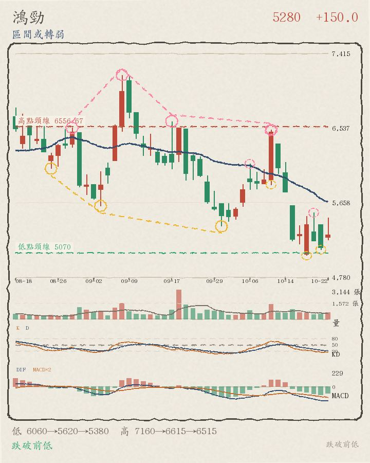
13:31 盤中 5280（+0.09%），比加權指數強 0.09 個百分點、跌破月線 5667.5，離高點頸線 5510 還差 4.2%，轉折還沒走出明顯方向。
- 月線位置：現價 5280 在月線 5667.5 之下（-6.8%）；5 日線 5259 也在月線之下（短均在下）；月線向下
- 量能：以已過交易時間推估，今天成交量約是 20 日均量的 0.88 倍（量平），比 20 日均量少一些
- 關鍵價位：高點頸線 5510 還沒突破，差 4.2%；前一交易日高點 5480（低於 3.6%）；今天盤中高點 5395（低於 2.1%）；今天盤中低點 5070（高於 4.1%）
- 轉折結構：低點 5620、5380、5035 與高點 7160、6615、6515 都沒有明顯遞增，屬於區間震盪或轉弱；還沒確認的轉折低點 10-19 5035、10-21 5105；還沒確認的轉折高點 10-20 5540、10-22 5480（圖上虛線小圈）
量平
↑ 回上方清單
嘉澤 3533 上市
1925 +130.0（+7.24%）
區間或轉弱 盤中成交值 35.44 億・全榜第 57 名（上市第 48 名）・相對大盤 +7.24
好條件 5/7：站上月線、月線向上、突破頸線、攻擊量（量增＋上漲）、守住今日高檔（距今日高點 1% 內）
不好條件 0/7：無
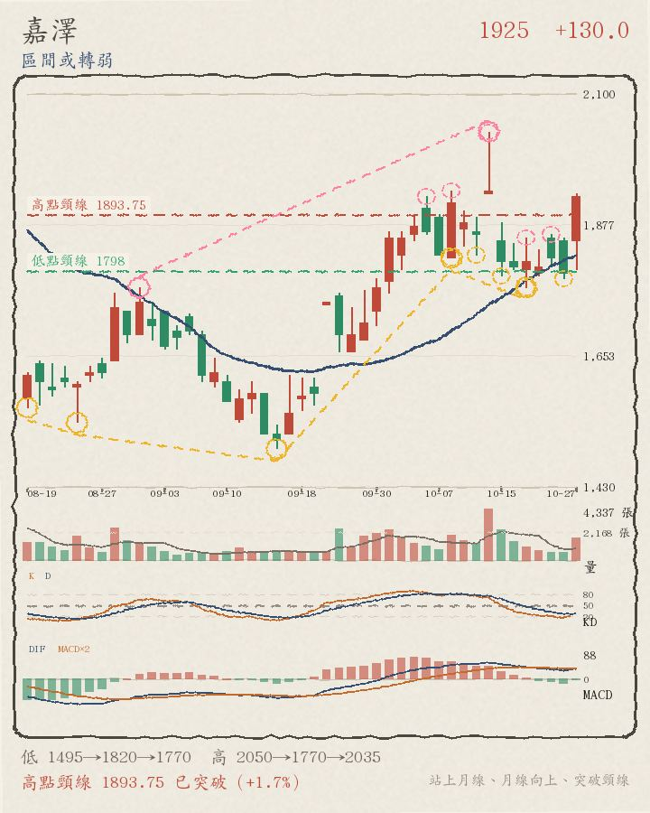
13:31 盤中 1925（+7.24%），比加權指數強 7.24 個百分點、站上月線 1816.25，已突破高點頸線 1893.75，轉折還沒走出明顯方向。
- 月線位置：現價 1925 在月線 1816.25 之上（+6.0%）；5 日線 1808 也在月線之下（短均在下）；月線向上
- 量能：以已過交易時間推估，今天成交量約是 20 日均量的 1.10 倍（量增），比 20 日均量大一些；上漲又量增，量價配合
- 關鍵價位：高點頸線 1893.75 已站上；前一交易日高點 1855（高於 3.8%）；今天盤中高點 1930（低於 0.3%）；今天盤中低點 1800（高於 6.9%）
- 轉折結構：低點 1495、1820、1770 與高點 2050、1770、2035 都沒有明顯遞增，屬於區間震盪或轉弱；還沒確認的轉折低點 10-19 1770、10-22 1785；還沒確認的轉折高點 10-19 1855、10-21 1860（圖上虛線小圈）
旺矽 6223 上櫃
4805 -85.0（-1.74%）
區間或轉弱 盤中成交值 35.32 億・全榜第 58 名（上櫃第 10 名）・相對大盤 -1.74
好條件 0/7：無
不好條件 6/7：跌破前低、今日下跌、相對大盤弱、在月線之下、跌破昨日低點、月線下彎

13:31 盤中 4805（-1.74%），比加權指數弱 1.74 個百分點、跌破月線 5390.75，離高點頸線 5270 還差 8.8%，轉折還沒走出明顯方向。
- 月線位置：現價 4805 在月線 5390.75 之下（-10.9%）；5 日線 5047 也在月線之下（短均在下）；月線向下
- 量能：以已過交易時間推估，今天成交量約是 20 日均量的 0.74 倍（量平），比 20 日均量少很多
- 關鍵價位：已跌破前一個轉折低點；高點頸線 5270 還在現價上方 8.8%；前一交易日高點 5170（低於 7.1%）；今天盤中高點 5040（低於 4.7%）；今天盤中低點 4730（高於 1.6%）
- 轉折結構：低點 5365、5090、4995 與高點 6060、5860、6160 都沒有明顯遞增，屬於區間震盪或轉弱；還沒確認的轉折低點 10-20 4865、10-22 4850；還沒確認的轉折高點 10-20 5370、10-22 5170（圖上虛線小圈）
信昌電 6173 上櫃
277 -16.5（-5.62%）
高點墊高、底部不穩 盤中成交值 35.21 億・全榜第 59 名（上櫃第 11 名）・相對大盤 -5.62
好條件 1/7：頭頭高
不好條件 7/7：跌破前低、今日下跌、相對大盤弱、在月線之下、貼近今日低點（1% 內）、跌破昨日低點、月線下彎

13:31 盤中 277（-5.62%），比加權指數弱 5.62 個百分點、跌破月線 303.696，離高點頸線 303.17 還差 8.6%，高點還在墊高（但底部沒同步墊高）。
- 月線位置：現價 277 在月線 303.696 之下（-8.8%）；5 日線 282.126 也在月線之下（短均在下）；月線向下
- 量能：以已過交易時間推估，今天成交量約是 20 日均量的 1.02 倍（量平），跟 20 日均量差不多
- 關鍵價位：已跌破前一個轉折低點；高點頸線 303.17 還在現價上方 8.6%；前一交易日高點 312.5（低於 11.4%）；今天盤中高點 309.5（低於 10.5%）；今天盤中低點 274.5（高於 0.9%）
- 轉折結構：高點 302.128、302.128、302.128 墊高（頭頭高），但低點 302.128、302.128、302.128 沒有同步墊高；還沒確認的轉折低點 10-15 302.128、10-20 248；還沒確認的轉折高點 10-20 298、10-22 312.5（圖上虛線小圈）
雙鴻 3324 上櫃
1335 -25.0（-1.84%）
高點墊高、底部不穩 盤中成交值 34.54 億・全榜第 60 名（上櫃第 12 名）・相對大盤 -1.84
好條件 1/7：頭頭高
不好條件 4/7：今日下跌、相對大盤弱、在月線之下、月線下彎
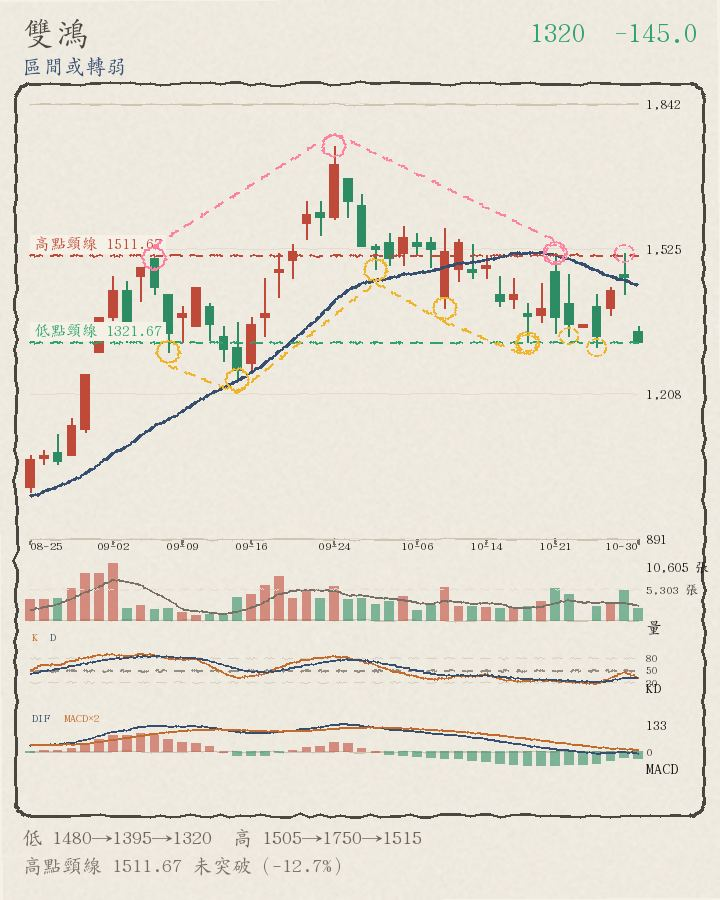
13:31 盤中 1335（-1.84%），比加權指數弱 1.84 個百分點、跌破月線 1503.5，離高點頸線 1510 還差 11.6%，高點還在墊高（但底部沒同步墊高）。
- 月線位置：現價 1335 在月線 1503.5 之下（-11.2%）；5 日線 1387 也在月線之下（短均在下）；月線向下
- 量能：以已過交易時間推估，今天成交量約是 20 日均量的 0.72 倍（量平），比 20 日均量少很多
- 關鍵價位：高點頸線 1510 還沒突破，差 11.6%；前一交易日高點 1470（低於 9.2%）；今天盤中高點 1425（低於 6.3%）；今天盤中低點 1310（高於 1.9%）
- 轉折結構：高點 1080、1505、1750 墊高（頭頭高），但低點 1480、1395、1320 沒有同步墊高；還沒確認的轉折低點 10-19 1320、10-22 1335；還沒確認的轉折高點 10-08 1570、10-21 1515（圖上虛線小圈）
GIS-KY 6456 上市
97.8 -4.2（-4.12%）
高點墊高、底部不穩 盤中成交值 33.29 億・全榜第 61 名（上市第 49 名）・相對大盤 -4.12
好條件 3/7：站上月線、月線向上、頭頭高
不好條件 3/7：今日下跌、相對大盤弱、跌破昨日低點
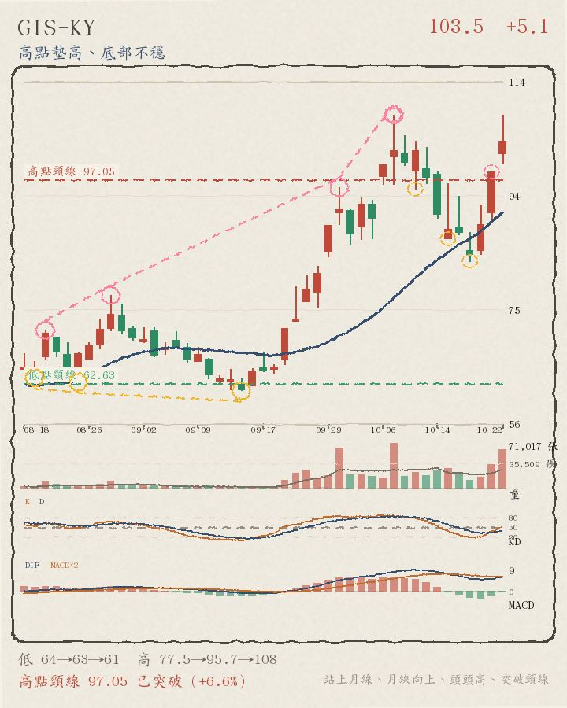
13:31 盤中 97.8（-4.12%），比加權指數弱 4.12 個百分點、站上月線 91.48，離高點頸線 108 還差 9.4%，高點還在墊高（但底部沒同步墊高）。
- 月線位置：現價 97.8 在月線 91.48 之上（+6.9%）；5 日線 92.48 也在月線之上（短均在上）；月線向上
- 量能：以已過交易時間推估，今天成交量約是 20 日均量的 1.34 倍（量增），比 20 日均量大不少；下跌卻量增，量價背離
- 關鍵價位：高點頸線 108 還沒突破，差 9.4%；前一交易日高點 108（低於 9.4%）；今天盤中高點 105（低於 6.9%）；今天盤中低點 95.5（高於 2.4%）
- 轉折結構：高點 77.5、95.7、108 墊高（頭頭高），但低點 62.9、61.4、83.3 沒有同步墊高；還沒確認的轉折低點 10-15 87.1、10-19 83.3；還沒確認的轉折高點 10-07 108、10-22 108（圖上虛線小圈）
中信金 2891 上市
75 +0.1（+0.13%）
高點墊高、底部不穩 盤中成交值 32.27 億・全榜第 62 名（上市第 50 名）・相對大盤 +0.13
好條件 4/7：站上月線、月線向上、頭頭高、攻擊量（量增＋上漲）
不好條件 0/7：無
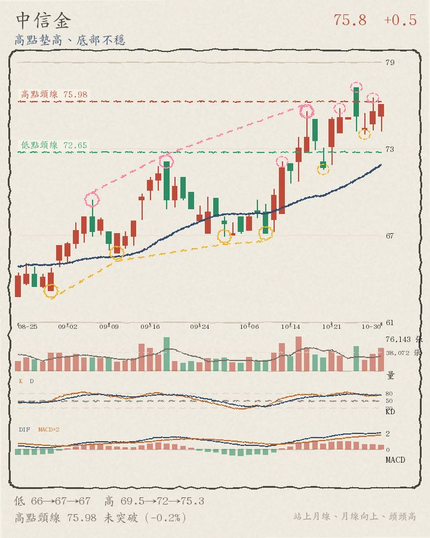
13:31 盤中 75（+0.13%），比加權指數強 0.13 個百分點、站上月線 70.255，離高點頸線 75.4 還差 0.5%，高點還在墊高（但底部沒同步墊高）。
- 月線位置：現價 75 在月線 70.255 之上（+6.8%）；5 日線 73.66 也在月線之上（短均在上）；月線向上
- 量能：以已過交易時間推估，今天成交量約是 20 日均量的 1.37 倍（量增），比 20 日均量大不少；上漲又量增，量價配合
- 關鍵價位：高點頸線 75.4 還沒突破，差 0.5%；前一交易日高點 75.5（低於 0.7%）；今天盤中高點 76.9（低於 2.5%）；今天盤中低點 74（高於 1.4%）
- 轉折結構：高點 69.5、72、75.3 墊高（頭頭高），但低點 66、67.1、67.3 沒有同步墊高；還沒確認的轉折低點 10-08 67.3、10-20 71.5；還沒確認的轉折高點 10-16 75.3、10-22 75.5（圖上虛線小圈）
頎邦 6147 上櫃
207 +4.0（+1.97%）
區間或轉弱 盤中成交值 31.29 億・全榜第 63 名（上櫃第 13 名）・相對大盤 +1.97
好條件 0/7：無
不好條件 2/7：在月線之下、月線下彎
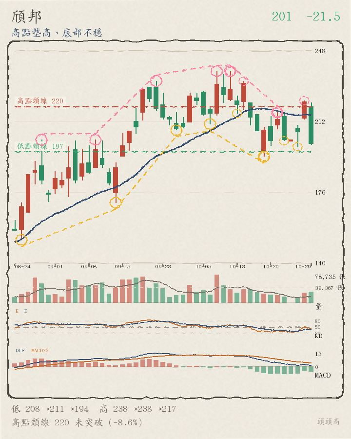
13:31 盤中 207（+1.97%），比加權指數強 1.97 個百分點、跌破月線 216.725，離高點頸線 235.5 還差 12.1%，轉折還沒走出明顯方向。
- 月線位置：現價 207 在月線 216.725 之下（-4.5%）；5 日線 206.9 也在月線之下（短均在下）；月線向下
- 量能：以已過交易時間推估，今天成交量約是 20 日均量的 0.45 倍（量縮），比 20 日均量少很多；上漲但量縮，量價背離
- 關鍵價位：高點頸線 235.5 還沒突破，差 12.1%；前一交易日高點 216.5（低於 4.4%）；今天盤中高點 210.5（低於 1.7%）；今天盤中低點 199.5（高於 3.8%）
- 轉折結構：低點 208、211、194.5 與高點 233、238、238 都沒有明顯遞增，屬於區間震盪或轉弱；還沒確認的轉折低點 10-19 194.5、10-22 202.5；還沒確認的轉折高點 10-14 233、10-21 217（圖上虛線小圈）
量縮
↑ 回上方清單
聯一光 3441 上櫃
196 -21.5（-9.89%）
上升趨勢（底底高＋頭頭高） 盤中成交值 24.8 億・全榜第 64 名（上櫃第 14 名）・相對大盤 -9.89
好條件 4/7：月線向上、底底高、頭頭高、突破頸線
不好條件 5/7：跌破前低、今日下跌、相對大盤弱、在月線之下、跌破昨日低點
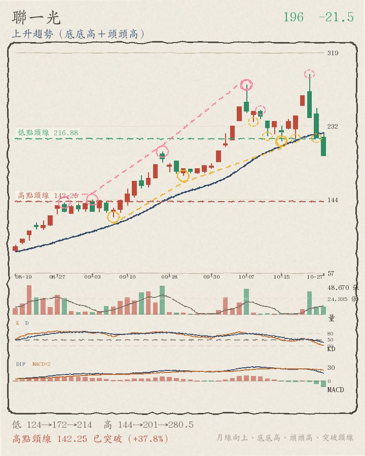
13:31 盤中 196（-9.89%），比加權指數弱 9.89 個百分點、跌破月線 222.6，已突破高點頸線 142.25，轉折結構仍是底底高＋頭頭高。
- 月線位置：現價 196 在月線 222.6 之下（-11.9%）；5 日線 241.7 也在月線之上（短均在上）；月線向上
- 量能：以已過交易時間推估，今天成交量約是 20 日均量的 1.52 倍（爆量），比 20 日均量大不少；下跌卻量增，量價背離
- 關鍵價位：高點頸線 142.25 已站上；前一交易日高點 253（低於 22.5%）；今天盤中高點 224（低於 12.5%）；今天盤中低點 196（高於 0.0%）
- 轉折結構：低點 123.5、172.5、213.5 一路墊高、高點 144、201、280.5 也一路墊高，是底底高＋頭頭高；還沒確認的轉折低點 10-19 217、10-22 217.5；還沒確認的轉折高點 10-12 250.5、10-21 293.5（圖上虛線小圈）
漢測 7856 上櫃
3360 -50.0（-1.47%）
區間或轉弱 盤中成交值 21.77 億・全榜第 65 名（上櫃第 15 名）・相對大盤 -1.47
好條件 0/7：無
不好條件 5/7：今日下跌、相對大盤弱、在月線之下、跌破昨日低點、月線下彎
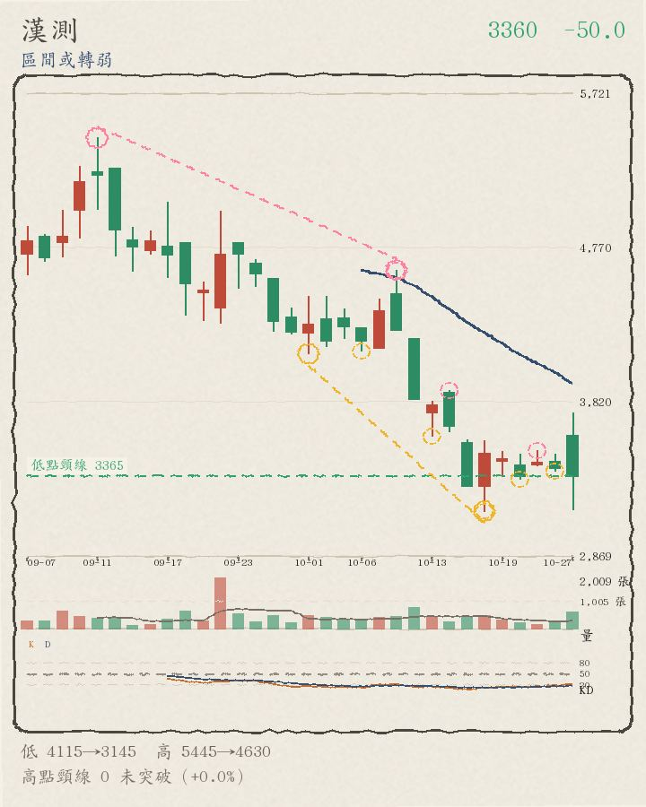
13:31 盤中 3360（-1.47%），比加權指數弱 1.47 個百分點、跌破月線 4001，轉折還沒走出明顯方向。
- 月線位置：現價 3360 在月線 4001 之下（-16.0%）；5 日線 3437 也在月線之下（短均在下）；月線向下
- 量能：以已過交易時間推估，今天成交量約是 20 日均量的 1.34 倍（量增），比 20 日均量大不少；下跌卻量增，量價背離
- 關鍵價位：前一交易日高點 3495（低於 3.9%）；今天盤中高點 3750（低於 10.4%）；今天盤中低點 3155（高於 6.5%）
- 轉折結構：低點 4115、3145 與高點 5445、4630 都沒有明顯遞增，屬於區間震盪或轉弱；還沒確認的轉折低點 10-20 3340、10-22 3390；還沒確認的轉折高點 10-14 3890、10-21 3520（圖上虛線小圈）
量增
↑ 回上方清單
萬潤 6187 上櫃
1290 +30.0（+2.38%）
區間或轉弱 盤中成交值 21.5 億・全榜第 66 名（上櫃第 16 名）・相對大盤 +2.38
好條件 1/7：月線向上
不好條件 1/7：在月線之下
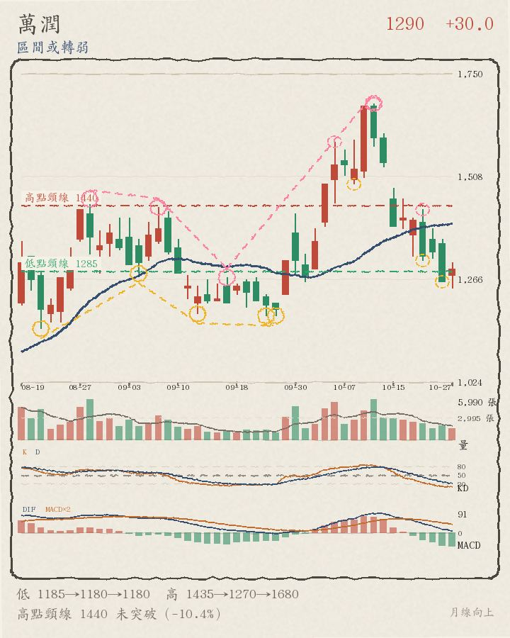
13:31 盤中 1290（+2.38%），比加權指數強 2.38 個百分點、跌破月線 1394，離高點頸線 1440 還差 10.4%，轉折還沒走出明顯方向。
- 月線位置：現價 1290 在月線 1394 之下（-7.5%）；5 日線 1345 也在月線之下（短均在下）；月線向上
- 量能：以已過交易時間推估，今天成交量約是 20 日均量的 0.57 倍（量縮），比 20 日均量少很多；上漲但量縮，量價背離
- 關鍵價位：高點頸線 1440 還沒突破，差 10.4%；前一交易日高點 1360（低於 5.1%）；今天盤中高點 1305（低於 1.1%）；今天盤中低點 1245（高於 3.6%）
- 轉折結構：低點 1185、1180、1180 與高點 1435、1270、1680 都沒有明顯遞增，屬於區間震盪或轉弱；還沒確認的轉折低點 10-20 1310、10-22 1260；還沒確認的轉折高點 10-13 1680、10-20 1430（圖上虛線小圈）
合晶 6182 上櫃
102 -2.5（-2.39%）
區間或轉弱 盤中成交值 20.68 億・全榜第 67 名（上櫃第 17 名）・相對大盤 -2.39
好條件 0/7：無
不好條件 6/7：跌破前低、今日下跌、相對大盤弱、在月線之下、跌破昨日低點、月線下彎
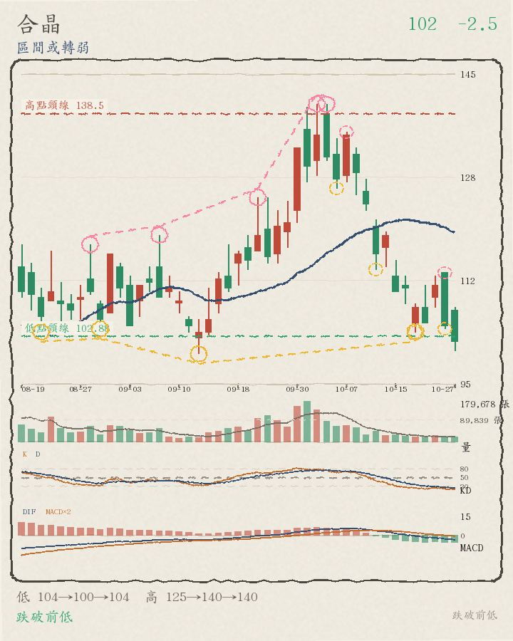
13:31 盤中 102（-2.39%），比加權指數弱 2.39 個百分點、跌破月線 120.25，離高點頸線 138.5 還差 26.4%，轉折還沒走出明顯方向。
- 月線位置：現價 102 在月線 120.25 之下（-15.2%）；5 日線 107.7 也在月線之下（短均在下）；月線向下
- 量能：以已過交易時間推估，今天成交量約是 20 日均量的 0.29 倍（量縮），比 20 日均量少很多
- 關鍵價位：已跌破前一個轉折低點；高點頸線 138.5 還在現價上方 26.4%；前一交易日高點 113（低於 9.7%）；今天盤中高點 107.5（低於 5.1%）；今天盤中低點 100.5（高於 1.5%）
- 轉折結構：低點 104、100、103.5 與高點 125、140、140 都沒有明顯遞增，屬於區間震盪或轉弱；還沒確認的轉折低點 10-19 103.5、10-22 104；還沒確認的轉折高點 10-07 135.5、10-22 113（圖上虛線小圈）
昇達科 3491 上櫃
1285 -35.0（-2.65%）
上升趨勢（底底高＋頭頭高） 盤中成交值 20.44 億・全榜第 68 名（上櫃第 18 名）・相對大盤 -2.65
好條件 2/7：底底高、頭頭高
不好條件 6/7：跌破前低、今日下跌、相對大盤弱、在月線之下、跌破昨日低點、月線下彎
13:31 盤中 1285（-2.65%），比加權指數弱 2.65 個百分點、跌破月線 1497.5，離高點頸線 1462.5 還差 12.1%，轉折結構仍是底底高＋頭頭高。
- 月線位置：現價 1285 在月線 1497.5 之下（-14.2%）；5 日線 1384 也在月線之下（短均在下）；月線向下
- 量能：以已過交易時間推估，今天成交量約是 20 日均量的 1.16 倍（量增），比 20 日均量大不少；下跌卻量增，量價背離
- 關鍵價位：已跌破前一個轉折低點；高點頸線 1462.5 還在現價上方 12.1%；前一交易日高點 1470（低於 12.6%）；今天盤中高點 1325（低於 3.0%）；今天盤中低點 1225（高於 4.9%）
- 轉折結構：低點 1220、1310、1450 一路墊高、高點 1580、1630、1760 也一路墊高，是底底高＋頭頭高；還沒確認的轉折低點 10-20 1315、10-22 1320；還沒確認的轉折高點 10-16 1455、10-22 1470（圖上虛線小圈）
世界 5347 上櫃
161.5 +0.5（+0.31%）
上升趨勢（底底高＋頭頭高） 盤中成交值 20.29 億・全榜第 69 名（上櫃第 19 名）・相對大盤 +0.31
好條件 2/7：底底高、頭頭高
不好條件 2/7：在月線之下、月線下彎
13:31 盤中 161.5（+0.31%），比加權指數強 0.31 個百分點、跌破月線 175.55，離高點頸線 170 還差 5.0%，轉折結構仍是底底高＋頭頭高。
- 月線位置：現價 161.5 在月線 175.55 之下（-8.0%）；5 日線 163.7 也在月線之下（短均在下）；月線向下
- 量能：以已過交易時間推估，今天成交量約是 20 日均量的 0.74 倍（量平），比 20 日均量少很多；上漲但量縮，量價背離
- 關鍵價位：高點頸線 170 還沒突破，差 5.0%；前一交易日高點 170（低於 5.0%）；今天盤中高點 164（低於 1.5%）；今天盤中低點 158（高於 2.2%）
- 轉折結構：低點 147、152.5、159 一路墊高、高點 158、163、195 也一路墊高，是底底高＋頭頭高；還沒確認的轉折低點 10-19 159、10-22 161；還沒確認的轉折高點 10-21 170、10-22 170（圖上虛線小圈）
力旺 3529 上櫃
2510 +25.0（+1.01%）
上升趨勢（底底高＋頭頭高） 盤中成交值 20 億・全榜第 70 名（上櫃第 20 名）・相對大盤 +1.01
好條件 2/7：底底高、頭頭高
不好條件 3/7：跌破前低、在月線之下、月線下彎
13:31 盤中 2510（+1.01%），比加權指數強 1.01 個百分點、跌破月線 2961.75，離高點頸線 2761.67 還差 9.1%，轉折結構仍是底底高＋頭頭高。
- 月線位置：現價 2510 在月線 2961.75 之下（-15.2%）；5 日線 2635 也在月線之下（短均在下）；月線向下
- 量能：以已過交易時間推估，今天成交量約是 20 日均量的 0.65 倍（量縮），比 20 日均量少很多；上漲但量縮，量價背離
- 關鍵價位：已跌破前一個轉折低點；高點頸線 2761.67 還在現價上方 9.1%；前一交易日高點 2665（低於 5.8%）；今天盤中高點 2625（低於 4.4%）；今天盤中低點 2470（高於 1.6%）
- 轉折結構：低點 1995、2090、2530 一路墊高、高點 2720、2875、3635 也一路墊高，是底底高＋頭頭高；還沒確認的轉折低點 10-19 2625、10-22 2470；還沒確認的轉折高點 10-16 2795、10-20 2770（圖上虛線小圈）